Chapter 5: Wireless, Mobile, WAN & the Internet¶
Not every network runs over cables in one building. This chapter covers the radio links in your home and pocket (Wi-Fi, Bluetooth, 4G/5G, satellites), the long-distance links, VPNs and SD-WAN overlays that join company offices together, and how thousands of separate networks connect to form the global Internet.
5.1 Wi-Fi Standards¶
Wi-Fi is the family of rules (standards) that lets devices swap data by radio instead of cables. The rules are written by the IEEE under the number 802.11, and each new letter or generation (Wi-Fi 4, 5, 6, 7) adds more speed, more capacity and better handling of crowded rooms.
Think of it like…
Each Wi-Fi generation is like upgrading a road: first a dirt track, then a paved two-lane road, then a multi-lane motorway with smart traffic lights and dedicated lanes for buses.
Real-world example
Priya's 2016 laptop shows 'Radio type: 802.11ac' and gets about 400 Mbps near her router. She upgrades to a Wi-Fi 7 laptop and router; the new pair uses a 320 MHz channel in the 6 GHz band and Multi-Link Operation, reaching well over 2 Gbps in the same room. Her old smart plug still connects using 802.11n on 2.4 GHz, because new routers stay backward compatible. Note that headline speeds are theoretical totals; one real device gets much less.
How it works¶
- The IEEE 802.11 working group writes each amendment (a, b, g, n, ac, ax, be, bn).
- The Wi-Fi Alliance tests and certifies products and gives friendly names (Wi-Fi 4, 5, 6, 6E, 7).
- Each generation improves modulation (QAM), channel width and number of antennas (spatial streams).
- Newer generations add tricks for busy places: MU-MIMO, OFDMA, target wake time, Multi-Link Operation.
- Routers and devices negotiate the best standard both support, so old devices still work.
Who uses it
Every home, office, school, café and airport; network engineers choose access points by Wi-Fi generation, and helpdesk staff troubleshoot speed complaints with it.
Key takeaway
Memorise the trio: Wi-Fi 4 = 802.11n, Wi-Fi 5 = 802.11ac (5 GHz only), Wi-Fi 6 = 802.11ax, Wi-Fi 6E = ax in 6 GHz, Wi-Fi 7 = 802.11be; the Wi-Fi Alliance assigns the friendly numbers.
Going deeper
- PHY rate = spatial streams x data subcarriers x bits per subcarrier x coding rate / symbol time. Doubling channel width or streams roughly doubles the rate; moving from 1024-QAM (10 bits) to 4096-QAM (12 bits) adds 20%.
- Wi-Fi is half duplex and shared: stations use CSMA/CA (listen, random back-off, wait for an ACK) instead of Ethernet's collision detection, so real TCP throughput is often only half to two-thirds of the PHY rate.
- Wi-Fi 6 stretched the OFDM symbol from 3.2 to 12.8 microseconds with narrower 78.125 kHz subcarriers, improving efficiency and multipath tolerance, especially outdoors and in large halls.
- BSS colouring (Wi-Fi 6) tags frames with a 6-bit colour so a radio can ignore a distant neighbour on the same channel, and Target Wake Time lets IoT devices sleep until a scheduled slot.
- Wi-Fi 7 adds preamble puncturing, so a wide channel can still be used when one 20 MHz slice is busy, and MLO modes such as STR and EMLSR for using several bands at once.
- IEEE folds finished amendments into periodic roll-up editions (such as 802.11-2020), so features like 802.11k, r, v and w are now simply part of the base standard.
- Higher QAM needs a very clean signal: 1024-QAM and 4096-QAM typically only work within a few metres of the access point with high SNR, so most clients run lower MCS rates.
Common mistakes & misconceptions
- Believing the box number: 'BE19000' adds up every band's theoretical maximum; one phone realistically gets a few hundred Mbps to around 1-2 Gbps.
- Expecting a new router to speed up old devices: a Wi-Fi 5 laptop still talks Wi-Fi 5; both ends must support the newer generation.
- Thinking an 'AC' router's 2.4 GHz radio is 802.11ac: Wi-Fi 5 is 5 GHz only, so its 2.4 GHz side is actually 802.11n.
- Confusing IEEE and Wi-Fi Alliance roles: IEEE writes the 802.11 standards; the Alliance certifies products and owns the Wi-Fi 6/7 names.
Try it: See which Wi-Fi standard and band your laptop is using right now¶
# Windows
netsh wlan show interfaces
# look for 'Radio type', 'Band', 'Channel' and 'Receive rate'
# Linux
iw dev wlan0 link
Key protocols, devices, standards & tools¶
| Name | What it does | Example |
|---|---|---|
| 802.11 (original, 'legacy') IEEE 802.11-1997 · Standard · Multi-layer · Obsolete |
The first Wi-Fi standard from 1997, offering just 1-2 Mbps in the 2.4 GHz band. | Only found in museums and textbooks today; it is why the whole family is called '802.11'. |
| 802.11b IEEE 802.11b-1999 · Standard · Multi-layer · Obsolete |
Up to 11 Mbps on 2.4 GHz. The standard that made home Wi-Fi popular around 2000. | Some routers have a 'disable 802.11b rates' option, because one slow b-client can drag down a whole network. |
| 802.11a IEEE 802.11a-1999 · Standard · Multi-layer · Obsolete |
Up to 54 Mbps using OFDM in the 5 GHz band; less interference than 2.4 GHz but shorter range. | Early 2000s enterprise networks used 802.11a to escape the crowded 2.4 GHz band. |
| 802.11g IEEE 802.11g-2003 · Standard · Multi-layer · Legacy |
Brought 54 Mbps OFDM speeds to the 2.4 GHz band while staying compatible with 802.11b. | A 2005 home router labelled '54G' used 802.11g; old barcode scanners in warehouses may still rely on it. |
| 802.11n (Wi-Fi 4) IEEE 802.11n-2009 · Standard · Multi-layer · Legacy |
Introduced MIMO (several antennas) and 40 MHz channels; up to 600 Mbps; works on 2.4 and 5 GHz. | Cheap smart plugs and bulbs often support only Wi-Fi 4 on 2.4 GHz because it is low-cost and long range. |
| 802.11ac (Wi-Fi 5) IEEE 802.11ac-2013 · Standard · Multi-layer · Current |
5 GHz only; 80/160 MHz channels, 256-QAM and downlink MU-MIMO; theoretical maximum about 6.9 Gbps. | Millions of homes still run perfectly well on a Wi-Fi 5 router delivering a few hundred Mbps to a laptop. |
| 802.11ax (Wi-Fi 6) IEEE 802.11ax-2021 · Standard · Multi-layer · Current |
Focuses on busy places: OFDMA, uplink and downlink MU-MIMO, 1024-QAM, BSS colouring, Target Wake Time; up to 9.6 Gbps. | A university lecture hall with 300 students streaming lectures stays usable thanks to Wi-Fi 6 OFDMA sharing each channel efficiently. |
| Wi-Fi 6E Wi-Fi Alliance (802.11ax in 6 GHz) · Standard · Multi-layer · Current |
Wi-Fi 6 extended into the new 6 GHz band, giving many extra clean, wide channels where regulators allow. | A VR headset uses a 6 GHz 160 MHz channel with no older devices around, giving low-latency wireless streaming. |
| 802.11be (Wi-Fi 7) IEEE 802.11be-2024; Wi-Fi Alliance certified since 2024 · Standard · Multi-layer · Current |
Extremely High Throughput: 320 MHz channels, 4096-QAM and Multi-Link Operation; theoretical peak about 46 Gbps. | A gaming PC links to a Wi-Fi 7 router on both 5 GHz and 6 GHz at once, smoothing out lag spikes. |
| 802.11bn (Wi-Fi 8) IEEE 802.11bn (draft, final approval expected 2028) · Standard · Multi-layer · Emerging |
'Ultra High Reliability': aims for steadier speeds, lower latency and better roaming, with access points coordinating rather than chasing higher peak speeds. | Early 'Wi-Fi 8 ready' chips were announced before the standard was final; treat pre-2028 claims as draft-based. |
| 802.11ad / 802.11ay (WiGig, 60 GHz) IEEE 802.11ad-2012, 802.11ay-2021 · Standard · Multi-layer · Legacy |
Multi-gigabit Wi-Fi at 60 GHz that barely passes through walls; mostly niche today. | Some older wireless laptop docks and VR adapters used 60 GHz WiGig within a single room. |
| QAM & spatial streams IEEE 802.11 PHY (MCS index tables) · Concept · Layer 1 · Current |
Wi-Fi speed comes from bits per symbol (QAM order), spatial streams, channel width and coding rate; each generation raises one or more. | A 2x2 Wi-Fi 6 phone on an 80 MHz channel with 1024-QAM peaks at about 1.2 Gbps; with one stream it gets half. |
| MU-MIMO IEEE 802.11ac (downlink), 802.11ax (uplink added) · Technology · Layer 1 · Current |
Multi-User MIMO: the access point uses several antennas to send separate streams to several devices at the same time. | A 4x4 access point sends to a phone, a laptop and a tablet in one go instead of taking turns. |
| OFDMA IEEE 802.11ax · Technology · Layer 1 · Current |
Splits one channel into small slices (resource units) so many devices can share a single transmission. | Twenty IoT sensors each sending tiny messages share one transmission slot instead of queuing one after another. |
| Multi-Link Operation (MLO) IEEE 802.11be · Technology · Layer 2 · Current |
Lets one device use two or more bands (2.4, 5, 6 GHz) simultaneously for more speed or as instant backup. | When a microwave oven disrupts 2.4 GHz, an MLO laptop keeps flowing smoothly over its 6 GHz link. |
5.2 Wi-Fi Design: Bands, Channels & Roaming¶
Designing Wi-Fi means choosing where access points go, which radio band and channel each uses, and how devices hop between them as people walk around. Good design avoids access points shouting over each other and gives strong signal everywhere it is needed.
Choosing a Wi-Fi band
| 2.4 GHz | 5 GHz | 6 GHz | |
|---|---|---|---|
| Range / walls | Best | Medium | Shortest |
| 20 MHz channels (US) | 3 non-overlapping | About 25 | 59 |
| Practical width | 20 MHz | 40-80 (160) MHz | 160-320 MHz |
| Main interference | Microwaves, Bluetooth, neighbours | Weather/airport radar (DFS) | Very little so far |
| Legacy clients | Many (b/g/n) | Some (a/n/ac) | None (6E and 7 only) |
| Security | Any WPA2/WPA3 | Any WPA2/WPA3 | WPA3 or OWE required |
| Best for | IoT, long range | Most laptops and phones | High density, low latency |
2.4 GHz wins on range, 6 GHz on clean capacity; 5 GHz is the everyday workhorse.
Think of it like…
Radio channels are like lanes on a motorway: if two neighbouring access points use the same or overlapping lanes, they crash into each other and everyone slows down.
Real-world example
Ahmed sets up Wi-Fi for a three-floor dental clinic. A site survey shows thick walls, so he places six access points and puts 2.4 GHz radios on channels 1, 6 and 11 only, alternating them so neighbours never match. On 5 GHz he uses 40 MHz channels rather than 160 MHz so more access points get their own channel. He enables 802.11k/v/r so receptionists' phones roam between access points without dropping calls, and checks every room has at least -67 dBm signal.
How it works¶
- Plan coverage and capacity: count users and devices, check building materials and run a site survey.
- Pick bands: 2.4 GHz for range, 5 GHz for capacity, 6 GHz for clean wide channels.
- Choose non-overlapping channels and sensible widths; lower transmit power so cells do not overlap too much.
- Access points broadcast beacons; clients scan, authenticate and associate to the best BSSID.
- As users move, roaming features (802.11k/v/r) help them switch to a better access point quickly.
- Validate with a post-install survey and monitor RSSI, SNR, retries and interference.
Who uses it
Wireless engineers, IT support teams, installers of home mesh systems and anyone fixing 'the Wi-Fi is slow upstairs' complaints.
Key takeaway
In 2.4 GHz only channels 1, 6 and 11 do not overlap (20 MHz wide); aim for about -67 dBm or better and 25 dB SNR for voice and video.
Going deeper
- US 5 GHz splits into U-NII-1 (36-48), U-NII-2A (52-64, DFS), U-NII-2C (100-144, DFS) and U-NII-3 (149-165); avoiding DFS leaves only about nine 20 MHz channels.
- In the US 6 GHz band, 1,200 MHz gives 59 x 20, 29 x 40, 14 x 80, 7 x 160 or 3 x 320 MHz channels; Preferred Scanning Channels let clients find 6 GHz networks quickly.
- Co-channel interference means cells on the same channel must share airtime because CSMA/CA defers; adjacent-channel interference from overlapping channels corrupts frames and is usually worse.
- Design for capacity, not just coverage: estimate devices per area and per-application throughput (for example a few Mbps each way for an HD video call), then size access point count and channel width.
- Roaming is always the client's decision; 802.11k and 802.11v only give hints, and 802.11r or OKC speed up re-authentication on WPA2/WPA3-Enterprise networks.
- Beacons go out every 100 time units (102.4 ms) at the lowest basic rate, so each extra SSID and each slow mandatory rate steals measurable airtime from real data.
- Match access point transmit power roughly to what phones can send back; a loud access point paired with a weak client creates one-way links where the phone hears but cannot be heard.
Common mistakes & misconceptions
- Turning every access point to full power: it causes co-channel interference and sticky clients; lower power and more cells usually perform better.
- Using 160 MHz channels in a busy office: you run out of independent channels, so neighbouring access points share airtime and everything slows.
- Picking 2.4 GHz channels like 3 or 9: they overlap two others; stick to 1, 6 and 11 (20 MHz wide).
- Planning by signal bars alone: also check SNR, retries and channel utilisation; strong signal in a noisy, crowded channel still performs badly.
Try it: List nearby networks with their BSSID, channel and signal strength¶
# Windows
netsh wlan show networks mode=bssid
# Linux (NetworkManager)
nmcli -f SSID,BSSID,CHAN,SIGNAL,SECURITY dev wifi list
Key protocols, devices, standards & tools¶
| Name | What it does | Example |
|---|---|---|
| 2.4 GHz band ITU / national regulators (ISM band) · Concept · Layer 1 · Current |
Long range and good wall penetration, but only three non-overlapping channels and crowded with microwaves, Bluetooth and neighbours. | A smart doorbell at the front gate connects on 2.4 GHz because 5 GHz signal does not reach that far. |
| 5 GHz band ITU / national regulators (U-NII in the US) · Concept · Layer 1 · Current |
Many more channels and less interference than 2.4 GHz, but shorter range. Some channels require DFS radar avoidance. | Office laptops are steered to 5 GHz so video calls get cleaner, faster channels. |
| 6 GHz band FCC (5.925-7.125 GHz), EU (5.945-6.425 GHz) and other regulators · Concept · Layer 1 · Current |
Newest Wi-Fi band for Wi-Fi 6E/7: wide, clean channels with no legacy devices; requires WPA3. Range is shortest. | A stadium uses 6 GHz to give 320 MHz-capable phones fast uploads of crowd videos. |
| Non-overlapping channels 1, 6, 11 IEEE 802.11 channel plan (2.4 GHz) · Concept · Layer 1 · Current |
Channels are 5 MHz apart but about 20 MHz wide, so only 1, 6 and 11 avoid overlapping in most regions. | Setting neighbouring access points to channels 1, 6 and 11 avoids adjacent-channel interference that channel 3 would cause. |
| Channel width (20/40/80/160/320 MHz) IEEE 802.11n/ac/ax/be · Concept · Layer 1 · Current |
Wider channels carry more data but there are fewer of them and they pick up more noise. | A home uses 160 MHz for speed; a busy office uses 20 or 40 MHz so dozens of access points get clean channels. |
| SSID IEEE 802.11 · Concept · Layer 2 · Current |
Service Set Identifier: the human-readable network name, up to 32 bytes, that you pick from the list. | A café broadcasts 'Maple-Guest' for customers and hides nothing important behind a separate 'Maple-Staff' SSID. |
| BSSID IEEE 802.11 · Concept · Layer 2 · Current |
The MAC address of one access point radio for one SSID. One SSID can have many BSSIDs across a building. | 'Maple-Guest' appears with three different BSSIDs, showing three access point radios serve the same network. |
| Beacon frame IEEE 802.11 management frame · Concept · Layer 2 · Current |
A small announcement each access point sends about ten times per second, advertising its SSID, capabilities and security. | Too many SSIDs on one radio means beacons eat airtime; best practice is three or four SSIDs maximum. |
| Probe, authentication & association IEEE 802.11 management frames · Concept · Layer 2 · Current |
The joining sequence: client probes for networks, authenticates (open or SAE), associates, then performs the security key handshake. | A packet capture of a failed join shows association succeeded but the WPA2 four-way handshake failed: a wrong password. |
| 802.11k (neighbour reports) IEEE 802.11k (now part of 802.11-2020) · Standard · Layer 2 · Current |
The access point gives clients a list of nearby access points and channels so they scan less before roaming. | A warehouse scanner checks just two recommended channels instead of all channels, saving battery and time. |
| 802.11v (BSS transition management) IEEE 802.11v (now part of 802.11-2020) · Standard · Layer 2 · Current |
Lets the network suggest to a client that it should move to a better or less busy access point. | A phone clinging to a distant access point is politely nudged to the one directly overhead. |
| 802.11r (Fast BSS Transition) IEEE 802.11r (now part of 802.11-2020) · Standard · Layer 2 · Current |
Pre-calculates security keys so roaming between access points takes milliseconds rather than a full re-login. | A nurse on a Wi-Fi voice call walks down a corridor with no audible gap thanks to 802.11r. |
| Band steering & minimum data rates Vendor features (Cisco, HPE Aruba, Ubiquiti, others) · Concept · Layer 2 · Current |
Band steering nudges dual-band clients onto 5 or 6 GHz; disabling slow legacy rates shrinks cells and frees airtime wasted on beacons. | Disabling 1, 2, 5.5 and 11 Mbps rates stops distant phones clinging to a far access point at crawling speed. |
| Site survey Tools such as Ekahau, Hamina, NetSpot · Tool · Layer 1 · Current |
Walking a building with measurement software (or simulating from floor plans) to map signal, noise and channel use. | A predictive survey of a new school plan shows a lab needs an extra access point before cables are installed. |
| RSSI / dBm signal strength IEEE 802.11 (RSSI); dBm is a standard power unit · Concept · Layer 1 · Current |
Signal power measured in negative dBm; closer to zero is stronger. -50 is excellent, -67 good for voice, -80 poor. | A laptop reading -82 dBm in the basement explains why video calls freeze there. |
| Interference, SNR & DFS IEEE 802.11h (DFS / TPC) · Concept · Layer 1 · Current |
Noise from other devices lowers signal-to-noise ratio; DFS forces 5 GHz access points off channels when radar is detected. | Near an airport, an access point keeps jumping channels: DFS radar detection is moving it, so the engineer picks non-DFS channels. |
5.3 Wi-Fi Security: WPA2, WPA3 & 802.1X¶
Because Wi-Fi travels through the air, anyone nearby can pick up the radio signal. Wi-Fi security scrambles (encrypts) the data and checks who is allowed in, either with one shared password or with individual logins for each person.

Think of it like…
Open Wi-Fi is like shouting across a crowded room; WPA2/WPA3 is like whispering in a private code, and Enterprise mode is a building where everyone has their own staff badge rather than one shared door key.
Real-world example
Northwind Logistics replaces its single shared WPA2 password with WPA3-Enterprise. Each employee's laptop now connects using a personal certificate checked by a RADIUS server via 802.1X, so when Sam leaves the company IT simply revokes his certificate instead of changing the password for 200 people. Visitors use a separate guest SSID with a captive portal, isolated from company systems and limited to internet access.
How it works¶
- Pick the security mode: Personal (shared passphrase) for homes, Enterprise (802.1X) for organisations.
- Client and access point authenticate: SAE handshake for WPA3-Personal, or EAP via a RADIUS server for Enterprise.
- Both sides derive fresh encryption keys (the four-way handshake), unique per session.
- Traffic is encrypted with AES (CCMP or GCMP); management frames are protected with PMF (802.11w).
- Guests are placed on a separate SSID/VLAN with client isolation and often a captive portal.
Who uses it
Home users, IT and security teams, auditors (PCI DSS requires secure wireless for card data) and anyone running a café or hotel network.
Key takeaway
WEP and WPA (TKIP) are broken and must never be used; choose WPA3 (or WPA2/WPA3 transition mode) and 802.1X with EAP-TLS for the strongest enterprise setup.
Going deeper
- The four-way handshake mixes the PMK with two random nonces and both MAC addresses to derive a fresh pairwise key (PTK), and delivers the group key (GTK) used for broadcast and multicast.
- In WPA2-Personal the PMK is PBKDF2-SHA1 of passphrase and SSID with 4,096 iterations, so anyone who captures a handshake can test guesses offline; long random passphrases are the only defence.
- WPA3-SAE (the Dragonfly exchange) is a password-authenticated key exchange: every guess needs a live attempt, and old sessions stay safe even if the password later leaks (forward secrecy).
- After the 2019 Dragonblood side-channel research, SAE gained the hash-to-element (H2E) method, which is mandatory on 6 GHz; KRACK (2017) attacked WPA2 handshake implementations and was fixed by patches.
- 6 GHz forbids WPA2 and open networks: only WPA3-Personal, WPA3-Enterprise or OWE are allowed, and Protected Management Frames are mandatory.
- Large organisations federate Enterprise Wi-Fi: eduroam chains RADIUS proxies between institutions, and Passpoint/OpenRoaming bring the same idea to public hotspots.
- Common wireless attacks to know: evil twin and rogue access points, deauthentication floods (stopped by PMF), handshake capture for offline cracking, and WPS PIN brute force (only 11,000 combinations).
Common mistakes & misconceptions
- Hiding the SSID is not security: the name still appears in client probe and association frames, and hidden networks can make phones leak the name everywhere.
- MAC address filtering is not access control: MACs are sent unencrypted and easily spoofed; use 802.1X or a strong passphrase instead.
- Deploying PEAP without forcing clients to validate the server certificate lets an evil twin collect password hashes; pin the CA and server name, or use EAP-TLS.
- Leaving WPA2/WPA3 transition mode on forever keeps downgrade attacks possible; move SSIDs to WPA3-only once all clients support it.
Try it: Check your connection's security type, and a lab hostapd WPA3 config¶
# Windows: look at 'Authentication' and 'Cipher'
netsh wlan show interfaces
# hostapd.conf (lab access point) - WPA3-Personal only
wpa=2
wpa_key_mgmt=SAE
rsn_pairwise=CCMP
ieee80211w=2
sae_password=LabPassphrase-2026
Key protocols, devices, standards & tools¶
| Name | What it does | Example |
|---|---|---|
| WEP IEEE 802.11-1997 · Protocol · Layer 2 · Obsolete |
Wired Equivalent Privacy: original RC4-based encryption with a tiny 24-bit IV; can be cracked in minutes. | A security audit finds an old WEP printer network and flags it as critical: free tools recover the key quickly. |
| WPA (TKIP) Wi-Fi Alliance (2003) · Protocol · Layer 2 · Obsolete |
Stop-gap fix for WEP that still used RC4 with TKIP; deprecated and not allowed on modern Wi-Fi certifications. | Disabling TKIP on a router can raise speeds, because Wi-Fi 4 and later forbid fast rates with TKIP. |
| WPA2-Personal (PSK) Wi-Fi Alliance; IEEE 802.11i-2004 · Protocol · Layer 2 · Current |
AES-CCMP encryption with a shared passphrase. Strong if the password is long; weak passwords can be guessed offline. | A family uses a 20-character passphrase so a captured handshake cannot be cracked by dictionary attacks. |
| WPA2-Enterprise Wi-Fi Alliance; IEEE 802.11i + 802.1X · Protocol · Layer 2 · Current |
AES encryption plus individual logins via 802.1X and a RADIUS server, so each user gets unique keys. | Universities use WPA2/WPA3-Enterprise for eduroam, letting students log in with their own campus credentials. |
| WPA3-Personal (SAE) Wi-Fi Alliance (2018); SAE in IEEE 802.11 · Protocol · Layer 2 · Current |
Simultaneous Authentication of Equals replaces PSK, blocking offline password guessing and giving forward secrecy. Mandatory on 6 GHz. | Even if a neighbour records the handshake, they cannot test millions of passwords against it later. |
| WPA3-Enterprise (incl. 192-bit mode) Wi-Fi Alliance · Protocol · Layer 2 · Current |
Enterprise Wi-Fi with Protected Management Frames required and an optional 192-bit suite (GCMP-256) for high-security organisations. | A defence contractor enables WPA3-Enterprise 192-bit mode to meet strict government cryptography rules. |
| OWE / Wi-Fi Enhanced Open IETF RFC 8110; Wi-Fi Alliance Enhanced Open · Protocol · Layer 2 · Current |
Opportunistic Wireless Encryption: encrypts open, password-less networks so nearby people cannot simply read traffic. | An airport keeps Wi-Fi password-free but enables Enhanced Open so travellers' traffic is still encrypted over the air. |
| 802.1X on Wi-Fi (EAPOL & PMK) IEEE 802.1X-2020 with IEEE 802.11 RSN (802.11i) · Standard · Layer 2 · Current |
On Wi-Fi the access point is the authenticator: it relays EAPOL frames to RADIUS, receives the master key, then runs the four-way handshake. | A capture shows EAP-TLS frames, a RADIUS Access-Accept, then EAPOL-Key messages 1-4 before the laptop's first DHCP request. |
| EAP IETF RFC 3748 · Protocol · Layer 2 · Current |
Extensible Authentication Protocol: a framework carrying different login methods (certificates, passwords) inside 802.1X. | The same 802.1X Wi-Fi can support EAP-TLS for company laptops and PEAP for older devices. |
| EAP-TLS IETF RFC 5216; RFC 9190 (TLS 1.3) · Protocol · Layer 7 · Current |
Strongest common EAP method: both client and server prove identity with digital certificates, no passwords. | Company-managed laptops receive certificates automatically from device management and join Wi-Fi with no password prompt. |
| PEAP (MSCHAPv2) Microsoft / Cisco / RSA (draft standard) · Protocol · Layer 7 · Legacy |
Username and password login inside a TLS tunnel. Common but weaker; risky if clients do not validate the server certificate. | A hospital migrates from PEAP to EAP-TLS after a test shows a fake access point could harvest staff passwords. |
| RADIUS for Wi-Fi (dynamic VLAN & keys) IETF RFC 2865/2866, RFC 3580 (802.1X usage); UDP 1812/1813 · Protocol · Layer 7 · Current |
Each access point or controller is a RADIUS client; Access-Accept can return the user's VLAN, policy and keying material for encryption. | Cisco ISE returns VLAN 30 for staff and VLAN 40 for contractors on the same SSID using Tunnel-Private-Group-ID attributes. |
| Protected Management Frames (PMF) IEEE 802.11w · Standard · Layer 2 · Current |
Protects control messages like 'disconnect' from being forged, stopping simple deauthentication attacks. Required by WPA3. | With PMF on, a prankster's tool sending fake 'disconnect' frames no longer kicks laptops off the network. |
| Captive portal IETF RFC 8910 (DHCP/RA option, replaced RFC 7710), RFC 8908 (API) · Concept · Layer 7 · Current |
A web page that appears after joining Wi-Fi to accept terms, log in or pay before internet access is allowed. | Hotel guests join 'Harbour-Hotel', then enter their room number on a portal page before browsing works. |
| Guest network & client isolation Vendor feature (SSID + VLAN design) · Concept · Layer 2 · Current |
A separate SSID that gives visitors internet only, blocks access to internal systems and stops guests seeing each other. | A café's guest network stops customers from browsing the till computer or each other's shared laptop folders. |
| WPS Wi-Fi Alliance (Wi-Fi Protected Setup, 2006) · Protocol · Layer 2 · Legacy |
Push-button or 8-digit PIN setup; the PIN method has a design flaw allowing brute force, so disable it. | Security hardening guides for home routers recommend switching WPS PIN off in the admin page. |
5.4 Wireless Architectures & Vendors¶
Small networks can manage each access point on its own, but a company with hundreds of access points needs a central 'brain' to configure them all, either a hardware controller on site or a cloud dashboard. This section covers those designs and the main companies selling enterprise Wi-Fi.
Three ways to run enterprise Wi-Fi
| Autonomous | Controller-based | Cloud-managed | |
|---|---|---|---|
| Config lives | On each AP | On the WLC | In vendor cloud |
| AP talks to | Nobody | WLC via CAPWAP | Cloud via HTTPS/TLS |
| User data path | Local VLAN | Tunnelled or local | Local VLAN |
| Roaming & RRM | Limited | Central, fast | Central, fast |
| Sweet spot | 1-3 APs | Large campus | Many small sites |
| Cost model | Hardware only | Hardware + licences | Hardware + subscription |
| Example | Small office AP | Cisco 9800, Aruba | Meraki, Mist, UniFi |
The bigger the estate, the more central control pays off.
Think of it like…
Autonomous access points are like shops each run by their own owner; controller-based and cloud-managed Wi-Fi is like a chain store where head office sets the prices, opening hours and layout for every branch at once.
Real-world example
Riverside High School has 120 access points. In the past a technician logged in to each one to change the guest password. They move to a cloud-managed platform: access points are unboxed, plugged into PoE switch ports, and automatically download their settings from the cloud. Now the technician changes the guest SSID once on a web dashboard and every access point updates within a minute.
How it works¶
- Autonomous: each access point holds its own full configuration and is managed one by one.
- Controller-based: lightweight access points build CAPWAP tunnels to a Wireless LAN Controller that pushes config and coordinates roaming and RF.
- Cloud-managed: access points connect out to a vendor cloud over HTTPS; you manage them through a web portal or app.
- Central system tunes channels and power automatically (RRM), tracks clients and raises alerts.
- Many platforms now add AI/analytics to spot problems, such as failing DHCP or poor roaming.
Who uses it
Enterprise network engineers, managed service providers and school/hospital IT teams; vendor certifications (Cisco CCNP Wireless topics, Aruba ACMA, CWNA) cover these designs.
Key takeaway
CAPWAP (RFC 5415) uses UDP 5246 for control and 5247 for data; in exams, a 'lightweight AP' always means it needs a controller.
Going deeper
- Split-MAC design: time-critical 802.11 work (beacons, ACKs, encryption) stays on the access point, while authentication, roaming decisions, RRM and policy run on the controller.
- A lightweight AP finds its controller via DHCP option 43, DNS (CISCO-CAPWAP-CONTROLLER.localdomain on Cisco), broadcast or a remembered address, then builds a DTLS-secured CAPWAP control tunnel.
- Controllers are deployed in pairs: Cisco 9800 supports stateful switchover (SSO) and N+1 designs, so clients stay connected when one controller fails.
- Cloud-managed APs only send management and telemetry to the cloud; if the internet link drops, existing SSIDs normally keep passing traffic, but you cannot change settings until it returns.
- Most platforms licence per access point per year; on some, an expired licence eventually stops management or even traffic, so renewals are an operational risk.
- AI-driven operations (Juniper Mist Marvis, Aruba and Cisco AI assistants) correlate DHCP, DNS, RADIUS and roaming events per client to explain why someone cannot connect.
Common mistakes & misconceptions
- Blocking CAPWAP at a firewall: UDP 5246 (control) and 5247 (data) must be open between branch APs and the controller or APs never join.
- Ignoring tunnel overhead: CAPWAP and DTLS add headers, so a path with a small MTU fragments user traffic unless MTU discovery or adjustment is configured.
- Assuming cloud-managed means no local design: VLANs, PoE budget, DHCP scopes and RF planning still have to be right on site.
- Letting staff plug in consumer access points: they create rogue networks that bypass 802.1X; enable WIPS and switch-port security.
Try it: Lab commands on a Cisco Catalyst 9800 WLC¶
show ap summary
show wlan summary
show wireless client summary
show ap dot11 5ghz summary
Key protocols, devices, standards & tools¶
| Name | What it does | Example |
|---|---|---|
| Autonomous (standalone) AP Generic · Device · Layer 2 · Current |
An access point configured and managed individually, holding its own settings; fine for homes and tiny offices. | A two-room accountancy office runs one standalone access point configured through its web page. |
| Lightweight AP Generic (Cisco term) · Device · Layer 2 · Current |
An access point that gets its configuration from a controller and cannot work fully on its own. | A new lightweight access point boots, discovers the controller via DHCP option 43 or DNS, then downloads its config. |
| Wireless LAN Controller (WLC) Generic (Cisco, HPE Aruba, others) · Device · Multi-layer · Current |
Central appliance or virtual machine managing many access points: config, roaming, radio tuning and security policies. | A hospital's pair of redundant controllers manages 900 access points across five buildings. |
| CAPWAP IETF RFC 5415 (802.11 binding RFC 5416); replaced Cisco LWAPP · Protocol · Layer 7 · Current |
Control And Provisioning of Wireless Access Points: tunnels between access points and controller, UDP 5246 control and 5247 data. | A firewall between branch access points and the central controller must allow UDP 5246-5247 or access points never join. |
| Local vs central switching (FlexConnect) Cisco FlexConnect; similar modes from other vendors · Concept · Layer 2 · Current |
Central switching tunnels user traffic to the controller; local switching lets branch access points drop traffic straight onto the local VLAN. | A shop's access points switch traffic locally, so card payments keep working when the WAN link to the central controller fails. |
| Cloud-managed Wi-Fi Generic · Concept · Multi-layer · Current |
Access points managed from a vendor's online dashboard; no on-site controller, usually licensed by subscription. | A retail chain with 300 small stores manages all Wi-Fi from one web dashboard without local IT staff. |
| Cisco Catalyst 9800 WLC Cisco · Device · Multi-layer · Current |
Cisco's current controller family, available as hardware, virtual machine, cloud instance or embedded on Catalyst switches. | An enterprise runs a 9800-CL virtual controller in its data centre to manage branch Catalyst access points. |
| Cisco Meraki Cisco · Service · Multi-layer · Current |
Cloud-managed Wi-Fi, switches, security appliances and cameras, configured entirely from the Meraki web dashboard. | A charity's IT volunteer configures Meraki access points for ten offices from home via the dashboard. |
| Juniper Mist Juniper Networks (part of HPE since 2025) · Service · Multi-layer · Current |
Cloud-managed Wi-Fi known for its AI assistant (Marvis) that explains and troubleshoots user connection problems. | An admin asks Marvis why a user's laptop cannot connect and is told the RADIUS server rejected the certificate. |
| HPE Aruba Networking Central Hewlett Packard Enterprise · Service · Multi-layer · Current |
Aruba's cloud management platform for access points, switches and gateways with AI insights; on-premises Mobility Conductor controllers remain an option. | A university monitors 3,000 Aruba access points and ClearPass 802.1X results from one Central dashboard. |
| Ubiquiti UniFi Ubiquiti · Software · Multi-layer · Current |
Affordable access points managed by the UniFi Network application on a local console or hosted, popular with small businesses. | A small hotel runs UniFi access points managed by a UniFi Cloud Gateway with no licence fees. |
| Ruckus Ruckus Networks · Device · Multi-layer · Current |
Enterprise Wi-Fi known for adaptive antenna technology; popular in hotels, stadiums, schools and apartment buildings. | A hotel chain picks Ruckus access points for strong coverage through thick walls into guest rooms. |
| ExtremeCloud IQ Extreme Networks (platform grew from its Aerohive acquisition) · Service · Multi-layer · Current |
Extreme's cloud management platform for its access points and switches, widely used in stadiums, schools and large venues. | A sports arena manages over a thousand under-seat access points and views client counts per seating section in ExtremeCloud IQ. |
| TP-Link Omada TP-Link · Software · Multi-layer · Current |
Budget-friendly business access points and switches managed by an Omada controller (hardware, software or cloud). | A family-run guesthouse uses Omada access points and a small hardware controller for central guest Wi-Fi. |
| Radio Resource Management (RRM) Vendor feature (Cisco RRM, Aruba ARM/AirMatch, others) · Concept · Layer 1 · Current |
Automatic tuning of channels and transmit power across all access points based on live measurements. | Overnight, the controller moves three access points off a channel hit by a neighbour's new network. |
| WIPS & rogue AP detection Vendor features (Cisco aWIPS, Aruba RAPIDS, Juniper Mist, others) · Concept · Layer 2 · Current |
Wireless Intrusion Prevention: access points scan the air for rogue access points, evil twins and attacks, then alert or contain them. | WIPS flags an unknown access point cabled into a meeting-room port; the switch port is traced and shut down. |
5.5 Wi-Fi Site Surveys & Wireless Troubleshooting¶
A site survey predicts or measures how Wi-Fi signals behave in a real building, so access points go in the right places on the right channels. Wireless troubleshooting is the detective work when Wi-Fi is slow or drops: checking signal strength, noise, interference, roaming and authentication. Radio is invisible and shared, so measurements beat guesswork.

Think of it like…
Planning Wi-Fi is like planning the lighting for a building: you work out where lamps go so every room is bright enough without lamps glaring into each other, then check with a light meter afterwards.
Real-world example
Willowbrook Care Home reports that nurses' Wi-Fi phones drop calls in the east wing. The engineer's passive survey finds -74 dBm there, and two access points both on channel 36 interfering with each other. She adds one access point, moves the others to channels 44 and 149, lowers transmit power to suit the phones and enables 802.11k/r. A validation survey then shows at least -67 dBm from two access points everywhere, and calls stop dropping.
How it works¶
- Gather requirements: device types, applications (voice, video, scanners), user density and floor plans.
- Run a predictive survey: model walls and access point positions in software before installing.
- After installation, run passive and active surveys to measure real coverage and performance.
- Check the spectrum for non-Wi-Fi interference, then set channels, channel widths and power.
- Validate against the targets and keep the heat maps as a baseline for future troubleshooting.
- When problems appear, compare live measurements and client logs with that baseline.
Who uses it
Wireless engineers, field technicians and managed service providers deploying Wi-Fi in hospitals, warehouses, schools and stadiums; Network+ tests wireless troubleshooting, and CWNA/CWDP specialise in it.
Key takeaway
Typical voice-grade design targets: signal of -67 dBm or stronger, SNR of at least 25 dB, a second access point audible for roaming, and as little co-channel overlap as possible.
Going deeper
- Signal alone is not enough: SNR is signal minus the noise floor, so -67 dBm over a -92 dBm noise floor gives 25 dB SNR, enough for high data rates.
- Survey with the real client devices in mind: phones and handheld scanners have weaker radios and antennas than laptops, and survey adapters can read several dB differently.
- Tools such as Ekahau Sidekick 2 and NetAlly AirCheck combine Wi-Fi measurement with spectrum analysis, revealing non-Wi-Fi interferers like microwave ovens, video senders and wireless cameras.
- Path loss rises with frequency, so 5 GHz and 6 GHz cells are smaller than 2.4 GHz cells at the same power; designs aim for similar cell sizes across bands.
- Packet captures in monitor mode show retries, deauthentication reason codes and failed handshakes; retry rates above roughly 10% are a common warning sign of interference or weak signal.
- Exam questions describe symptoms and expect the cause: slow at the edge (weak signal), slow everywhere at busy times (capacity or co-channel interference), drops when walking (roaming), cannot join (authentication).
Common mistakes & misconceptions
- Designing for coverage only; a hall full of devices needs capacity, which means more access points on narrower channels at lower power.
- Setting every access point to maximum power, which increases co-channel interference and creates one-way links with weaker clients.
- Trusting a predictive survey without on-site validation; real walls, furniture, stock and people differ from the model.
- Blaming the radio for every 'can't connect' complaint; many failures are DHCP, DNS or RADIUS problems after a successful association.
Try it: Check your own Wi-Fi connection from the command line¶
netsh wlan show interfaces # Windows: SSID, BSSID, channel, signal, rates
netsh wlan show wlanreport # Windows (admin): HTML report of drops and errors
iw dev wlan0 link # Linux: signal in dBm and bitrate
sudo wdutil info # macOS: RSSI, noise, channel
Key protocols, devices, standards & tools¶
| Name | What it does | Example |
|---|---|---|
| Predictive survey Design tools such as Ekahau AI Pro and Hamina · Concept · Layer 1 · Current |
A software model of the floor plan and wall materials, used to plan access point numbers and positions before anything is installed. | The model shows a concrete lift shaft blocking signal, so an extra access point is planned for the lobby before cabling starts. |
| Passive survey Survey practice (Ekahau, NetSpot, NetAlly AirCheck and similar) · Concept · Layer 1 · Current |
Walking the site while listening to beacons, recording signal, noise and channel overlap from every access point without connecting. | A passive walk reveals a neighbour's access point on channel 1 at -60 dBm inside the meeting room. |
| Active survey Survey practice · Concept · Multi-layer · Current |
Walking the site while connected, measuring real throughput, latency, packet loss and roaming between access points. | Active testing shows 400 ms roaming gaps near the stairwell, explaining the dropped voice calls. |
| Validation survey Survey practice (post-installation) · Concept · Layer 1 · Current |
A survey after installation proving the network meets the agreed coverage and performance targets; it becomes the documented baseline. | The project is signed off only when the validation report shows -67 dBm and 25 dB SNR in every clinical area. |
| Heat map Survey tool output · Concept · Layer 1 · Current |
A colour-coded floor plan showing signal strength, SNR, channel overlap or data rate at every point surveyed. | A red patch on the signal heat map behind the server room matches users' complaints about the staff kitchen. |
| Coverage vs capacity design Wireless design practice · Concept · Layer 1 · Current |
Coverage asks 'is the signal strong enough?'; capacity asks 'can each access point serve all the devices here?'. Dense areas need both. | A 300-seat lecture hall needs several access points on narrow channels for capacity, though one could cover it for signal alone. |
| Co-channel interference (CCI) IEEE 802.11 medium access (CSMA/CA) · Concept · Layer 1 · Current |
Access points on the same channel that can hear each other must take turns, sharing airtime and lowering everyone's throughput. | Ten home routers on channel 6 in a block of flats each get a slice of airtime, even with perfect signal. |
| Adjacent-channel interference (ACI) IEEE 802.11 channel plans · Concept · Layer 1 · Current |
Partially overlapping channels, such as 2.4 GHz channels 1 and 3, corrupt each other's frames instead of politely taking turns. | Moving an access point from channel 3 to 1, 6 or 11 removes the errors it was causing its channel-1 neighbour. |
| Hidden node problem IEEE 802.11 (mitigated with RTS/CTS) · Concept · Layer 2 · Current |
Two clients can hear the access point but not each other, so they transmit at the same time and collide at the access point. | Laptops at opposite ends of a warehouse keep colliding; enabling RTS/CTS and adding an access point cuts the retries. |
| Sticky clients Common roaming problem · Concept · Layer 2 · Current |
Devices that cling to a distant access point with weak signal instead of roaming to a closer one, causing slow speeds. | A tablet stays on the lobby access point at -80 dBm while upstairs; higher minimum data rates and 802.11v nudge it across. |
| Antenna types (omni & directional) Omnidirectional dipoles; directional patch, sector and Yagi antennas · Device · Layer 1 · Current |
Omni antennas radiate all around like a bare bulb; directional antennas focus energy one way like a torch, for corridors or long links. | A warehouse aisle gets a patch antenna aimed down its length instead of an omni wasting signal on the metal racking. |
| EIRP & antenna gain Radio regulators (e.g. FCC, ETSI) cap EIRP per band; units dBm and dBi · Concept · Layer 1 · Current |
Effective isotropic radiated power = transmitter power + antenna gain - cable loss; regulators set the maximum allowed. | 17 dBm transmitter + 6 dBi antenna - 1 dB cable loss = 22 dBm EIRP, which the engineer checks against the local limit. |
| Transmit power mismatch Wireless design practice · Concept · Layer 1 · Current |
An access point at full power reaches clients whose weaker radios cannot answer back, creating one-way coverage. | Phones show full bars but uploads fail; lowering access point power closer to the phones' level makes cells realistic. |
| Building material attenuation RF propagation (losses grow with frequency) · Concept · Layer 1 · Current |
Walls, glass, water and metal absorb or reflect signal; brick or concrete can cost 10 dB or more, and metal blocks almost everything. | A new fire door with wired glass drops a corridor's signal by about 12 dB, so an extra access point is added. |
| Association & authentication failures IEEE 802.11 / WPA2 / WPA3 / 802.1X · Concept · Layer 2 · Current |
The SSID is visible but joining fails: wrong passphrase, security mismatch (WPA2 vs WPA3), expired certificate or RADIUS trouble. | An old barcode scanner cannot join a WPA3-only SSID, so it is moved to an SSID running WPA2/WPA3 transition mode. |
| Wireless client diagnostics Windows netsh wlan; macOS Wireless Diagnostics and wdutil; Linux iw · Tool · Multi-layer · Current |
Built-in tools showing the client's own view: signal, noise, channel, data rate, roaming events and disconnection reasons. | The Windows WLAN report shows repeated authentication timeouts, pointing at the RADIUS server rather than the radio. |
5.6 Short-Range Wireless¶
Short-range wireless technologies connect devices that sit close together, from a few centimetres to a few dozen metres: earbuds, contactless cards, door locks, light bulbs. They trade speed for very low power use, so batteries last months or years.
Three short-range radios compared
| Bluetooth LE | Thread (802.15.4) | NFC | |
|---|---|---|---|
| Frequency | 2.4 GHz | 2.4 GHz | 13.56 MHz |
| Raw data rate | 1-2 Mbps | 250 kbps | 106-424 kbps |
| Typical range | 10-100 m | 10-30 m per hop | About 4 cm |
| Topology | Point-to-point, mesh | Self-healing mesh | Touch, one-to-one |
| Speaks IP? | No (GATT) | Yes, IPv6 / 6LoWPAN | No |
| Typical use | Wearables, audio, tags | Smart-home sensors | Payments, transit, pairing |
Range, power and whether the device speaks IP decide the right choice.
Think of it like…
Wi-Fi is like a loudspeaker for a whole house; Bluetooth is a conversation across a table, and NFC is a whisper when your ears practically touch.
Real-world example
When Leila gets home, her phone's UWB chip precisely measures distance to her car and smart lock, unlocking the front door as she approaches. Her Bluetooth LE earbuds keep playing music; a Thread motion sensor in the hallway, controlled through Matter, switches on the Zigbee-based lights via the hub. Later she pays for groceries by tapping her phone on an NFC reader, which works only within a few centimetres.
How it works¶
- Devices advertise or wait to be discovered (Bluetooth advertising, NFC field, Zigbee/Thread joining).
- Pairing or commissioning exchanges keys so the link is encrypted.
- Data flows in small, low-power bursts; many devices sleep most of the time.
- Mesh technologies (Thread, Zigbee, Z-Wave, Bluetooth Mesh) relay messages device to device to cover a home.
- Matter sits on top as a common application language so devices from different brands work together.
Who uses it
Smart-home and wearable makers, retail and logistics (RFID), payments (NFC), automotive (digital keys) and every smartphone user.
Key takeaway
Remember: Zigbee and Thread both use IEEE 802.15.4 radios (Thread is IPv6-based, Zigbee is not); Matter is the application layer that runs over Thread, Wi-Fi and Ethernet, with Bluetooth LE used only for setup.
Going deeper
- Bluetooth LE uses forty 2 MHz channels; 37, 38 and 39 carry advertisements, and data lives in GATT services and characteristics identified by UUIDs, such as Heart Rate service 0x180D.
- Since Bluetooth 4.2, LE Secure Connections pairs with elliptic-curve Diffie-Hellman (P-256); 'Just Works' pairing has no man-in-the-middle protection, while numeric comparison and passkey entry do.
- Bluetooth Classic hops 1,600 times a second across 79 channels with adaptive frequency hopping, skipping channels it finds busy with Wi-Fi.
- 802.15.4 at 2.4 GHz offers channels 11-26; Zigbee channels 15, 20, 25 and 26 fall between Wi-Fi channels 1, 6 and 11, reducing interference.
- Thread devices take roles such as border router, router, end device and sleepy end device; a partition supports up to 32 active routers, and border routers join the mesh to Wi-Fi or Ethernet.
- UWB measures distance by timing radio pulses (two-way ranging) and angle of arrival, typically on channel 5 (about 6.5 GHz) or channel 9 (about 8 GHz), giving centimetre-level accuracy.
- NFC works in three modes: reader/writer (reading tags), card emulation (phone acts as a payment or transit card) and peer-to-peer, all at 13.56 MHz.
Common mistakes & misconceptions
- Thinking Zigbee and Thread are the same: they share the 802.15.4 radio, but Thread is IP-based and Zigbee uses its own network layer and needs a hub.
- Assuming 'Just Works' Bluetooth pairing is secure: it does not stop a nearby attacker in the middle; use numeric comparison where devices allow it.
- Believing NFC cannot be read by others: it is short range, not magic; payments are safe mainly because of tokenisation and cryptograms, not distance alone.
- Blaming Wi-Fi for every 2.4 GHz problem: Bluetooth, Zigbee, baby monitors and microwave ovens all share the same band.
Try it: Scan for nearby Bluetooth LE devices on Linux, or list Bluetooth devices on Windows¶
# Linux (BlueZ)
bluetoothctl
scan on
devices
scan off
# Windows PowerShell
Get-PnpDevice -Class Bluetooth
Key protocols, devices, standards & tools¶
| Name | What it does | Example |
|---|---|---|
| Bluetooth Classic (BR/EDR) Bluetooth SIG · Technology · Multi-layer · Current |
Original Bluetooth for continuous streams, up to about 3 Mbps on 2.4 GHz with 79 frequency-hopping channels. | A car stereo and older headphones use Bluetooth Classic for hands-free calls and A2DP music streaming. |
| Bluetooth Low Energy (LE) Bluetooth SIG (introduced in Bluetooth 4.0, 2010) · Technology · Multi-layer · Current |
Power-sipping Bluetooth for short bursts of data; 40 channels, three used for advertising. Runs fitness trackers for months. | A heart-rate strap sends a few bytes per second to a running app using BLE GATT services. |
| Bluetooth 5.x features Bluetooth SIG (5.0 in 2016 through 5.4 in 2023) · Standard · Multi-layer · Current |
Added 2 Mbps LE PHY, long-range Coded PHY, extended advertising, LE Audio basis (5.2) and encrypted advertising data (5.4). | A garden sensor uses the long-range Coded PHY to reach a phone inside the house 100 m away. |
| LE Audio & Auracast Bluetooth SIG · Technology · Layer 7 · Current |
New Bluetooth audio built on LE with the efficient LC3 codec; Auracast lets one source broadcast to unlimited listeners. | An airport gate broadcasts announcements via Auracast directly to travellers' earbuds and hearing aids. |
| Bluetooth 6.x (Channel Sounding) Bluetooth SIG (6.0 Sept 2024; 6.1, 6.2 in 2025) · Standard · Multi-layer · Current |
6.0 adds Channel Sounding for centimetre-level distance measurement; later releases improve privacy and allow much shorter connection intervals. | A 'find my keys' tag uses Channel Sounding to show a phone the item is 1.4 m away. |
| Bluetooth SIG Bluetooth Special Interest Group (founded 1998) · Organisation |
Industry group that develops Bluetooth specifications and qualifies products using the Bluetooth name and logo. | Before selling new earbuds, a manufacturer must complete Bluetooth SIG qualification and list the product. |
| NFC NFC Forum; ISO/IEC 18092 and 14443 · Technology · Multi-layer · Current |
Near Field Communication at 13.56 MHz, working only within about 4 cm; used for tap-to-pay, transit cards and pairing. | Tapping a phone on a café payment terminal sends a tokenised card number via NFC in under a second. |
| RFID ISO/IEC 18000 series; GS1 EPC Gen2 (ISO/IEC 18000-63) · Technology · Layer 1 · Current |
Radio tags read by a reader; passive tags have no battery. LF/HF for access cards, UHF reads tags metres away. | A clothing store counts every tagged item on a rail in seconds by walking past with a UHF RFID reader. |
| UWB (Ultra-Wideband) IEEE 802.15.4z; FiRa Consortium; Car Connectivity Consortium · Technology · Layer 1 · Current |
Very short pulses spread over wide spectrum (about 6-9 GHz) to measure distance and direction to within centimetres. | A car's digital key uses UWB to confirm the phone is really beside the door, defeating relay attacks. |
| IEEE 802.15.4 IEEE 802.15.4 · Standard · Layer 2 · Current |
Low-rate, low-power radio standard (250 kbps at 2.4 GHz) that Zigbee, Thread and Wi-SUN build on. | A Thread sensor and a Zigbee bulb use the same 802.15.4 radio type but speak different upper-layer protocols. |
| Zigbee Connectivity Standards Alliance (CSA) · Protocol · Multi-layer · Current |
Low-power mesh network on 802.15.4 used by smart bulbs, sensors and meters; needs a hub or coordinator. | Philips Hue bulbs form a Zigbee mesh controlled by the Hue Bridge plugged into the router. |
| Z-Wave Z-Wave Alliance; ITU-T G.9959 radio · Protocol · Multi-layer · Current |
Smart-home mesh in sub-1 GHz bands (about 868 MHz Europe, 908 MHz US), avoiding crowded 2.4 GHz. | A security installer fits Z-Wave door sensors and sirens that talk to an alarm hub through brick walls. |
| Thread Thread Group · Protocol · Layer 3 · Current |
IPv6-based low-power mesh on 802.15.4 (using 6LoWPAN); border routers connect it to the home network. | A smart speaker acts as a Thread border router so battery door sensors get IPv6 addresses. |
| Wi-Fi Direct Wi-Fi Alliance (Wi-Fi P2P, 2010) · Standard · Layer 2 · Current |
Lets two devices connect over Wi-Fi without an access point; one becomes the 'group owner', acting like a tiny temporary access point. | A phone sends photos to a printer, or mirrors its screen to a TV with Miracast, over Wi-Fi Direct without the home network. |
| Infrared (IrDA) Infrared Data Association · Technology · Layer 1 · Legacy |
Line-of-sight light-based data links once used by laptops and phones; consumer IR survives in TV remote controls. | Early-2000s phones swapped contacts by pointing infrared ports at each other; today mostly remotes use IR. |
5.7 Low-Power Wide-Area & IoT Networks¶
Low-Power Wide-Area Networks (LPWANs) connect sensors that send tiny amounts of data over kilometres, running for years on a single battery. They are slow on purpose: a water meter only needs to say 'I used 3 litres' a few times a day.

Think of it like…
An LPWAN is like sending postcards instead of making video calls: short messages, cheap to send, and they travel a long way, but you would never use them for a conversation.
Real-world example
The town of Brookvale fits 5,000 water meters with LoRaWAN radios. Each meter sends a 20-byte reading every few hours to one of six gateways on rooftops up to several kilometres away; the gateways forward data over the internet to a network server and then to the billing app. Batteries are expected to last around ten years. For bin-level sensors in the town centre, the council instead uses LTE-M SIM cards from a mobile operator, avoiding the need for its own gateways.
How it works¶
- A sensor wakes up, measures something and transmits a small packet at low power.
- Unlicensed LPWANs (LoRaWAN, Sigfox) send to gateways or base stations; cellular IoT (NB-IoT, LTE-M, RedCap) uses the mobile network.
- Gateways forward data over the internet to a network server, which deduplicates and decrypts it.
- The application server stores and displays data or triggers alerts.
- The device goes back to deep sleep (power saving modes like PSM and eDRX in cellular IoT).
Who uses it
Utilities, smart cities, agriculture, logistics and asset tracking, building management and industrial IoT engineers.
Key takeaway
LoRa is the radio (physical layer, owned by Semtech); LoRaWAN is the network protocol on top. NB-IoT and LTE-M are 3GPP cellular standards from Release 13.
Going deeper
- LoRa spreading factors SF7-SF12 trade speed for sensitivity: on a 125 kHz channel, data rates range from about 5.5 kbps at SF7 down to roughly 0.3 kbps at SF12.
- LoRaWAN encrypts twice with AES-128: a network session key protects integrity to the network server, and an application session key encrypts the payload end to end to the application.
- Devices join by OTAA (over-the-air activation, fresh keys per join, recommended) or ABP (keys hard-coded at the factory, simpler but weaker and prone to counter problems).
- NB-IoT uses a 180 kHz carrier that can sit inside an LTE carrier, in its guard band or standalone, and targets about 164 dB maximum coupling loss for deep-indoor coverage.
- PSM lets a cellular IoT device stay registered while unreachable for hours or days (timers T3412 extended and T3324), while eDRX stretches the gaps between paging checks.
- 2G and 3G shutdowns pushed millions of alarms, meters and trackers onto LTE-M, NB-IoT, LTE Cat-1 bis and, increasingly, 5G RedCap modules.
- Choosing a technology means balancing data size and frequency, battery target, mobility, coverage (own gateways versus operator network), module cost and expected network lifetime.
Common mistakes & misconceptions
- Using LoRa and LoRaWAN as synonyms: LoRa is Semtech's radio modulation; LoRaWAN is the MAC and network protocol built on it.
- Expecting LPWAN to carry images or frequent firmware updates: payloads are tiny and airtime is limited by law and design.
- Ignoring regional rules: EU 868 MHz duty-cycle limits and US 915 MHz dwell-time rules restrict how often and how long devices may transmit.
- Assuming NB-IoT works everywhere: coverage, roaming support and operator retirement plans differ by country, so check before choosing modules.
Try it: AT commands on a cellular IoT dev board to check signal and network registration¶
AT+CSQ # signal quality
AT+COPS? # which operator
AT+CEREG? # LTE/NB-IoT registration status
AT+CPSMS? # power saving mode settings
Key protocols, devices, standards & tools¶
| Name | What it does | Example |
|---|---|---|
| LPWAN Generic · Concept · Multi-layer · Current |
Low-Power Wide-Area Network: long range (kilometres), low data rate, years of battery life, low cost per device. | A parking sensor reports 'space taken' or 'space free' over an LPWAN instead of Wi-Fi. |
| LoRa Semtech (proprietary modulation) · Technology · Layer 1 · Current |
Chirp spread spectrum radio modulation in unlicensed sub-GHz bands (868 MHz EU, 915 MHz US), reaching kilometres. | Hobbyists use LoRa radios for off-grid text messaging between hikers several kilometres apart. |
| LoRaWAN LoRa Alliance; ITU-T Y.4480 (2021) · Protocol · Layer 2 · Current |
The MAC and network protocol on top of LoRa: star-of-stars design with gateways, network server and AES encryption. | A vineyard runs a private LoRaWAN with one gateway covering soil-moisture sensors across every field. |
| LoRaWAN device classes (A, B, C) LoRa Alliance LoRaWAN specification · Concept · Layer 2 · Current |
Class A listens only briefly after each uplink (lowest power), Class B adds scheduled listening slots, Class C listens almost constantly. | Battery water meters use Class A; a mains-powered streetlight controller uses Class C so 'dim now' commands arrive instantly. |
| Spreading factor, ADR & duty cycle LoRa Alliance; ETSI EN 300 220 (EU 868 MHz rules) · Concept · Layer 1 · Current |
Higher LoRa spreading factors reach further but send slower; ADR tunes each device, and EU rules often cap airtime at 1%. | A sensor at SF12 spends over a second sending one message, so the 1% duty cycle forces it to wait minutes before sending again. |
| The Things Network The Things Industries · Service · Layer 7 · Current |
Community and commercial LoRaWAN network server platform where volunteers' gateways provide shared coverage. | A student registers a temperature sensor on The Things Network and sees readings in a dashboard within an hour. |
| Sigfox (Sigfox 0G) UnaBiz (acquired Sigfox in 2022) · Technology · Multi-layer · Current |
Ultra-narrowband LPWAN with tiny messages (12-byte uplink, about 140 per day). Survived bankruptcy; coverage varies by country, so verify locally. | A pallet tracker sends its location a few times a day over Sigfox, but buyers check national coverage first. |
| NB-IoT 3GPP Release 13 (2016) · Standard · Multi-layer · Current |
Narrowband IoT: cellular IoT in about 200 kHz of spectrum, great indoor and underground reach, low speed, little mobility. | Gas meters in basements report via NB-IoT, whose deep coverage beats normal 4G. Some operators have retired it. |
| LTE-M (Cat-M1) 3GPP Release 13 (2016) · Standard · Multi-layer · Current |
Cellular IoT using 1.4 MHz LTE channels; around 1 Mbps, supports moving devices, handover and even voice. | A smartwatch for elderly users makes emergency voice calls and sends location over LTE-M. |
| Wi-Fi HaLow (802.11ah) IEEE 802.11ah; Wi-Fi Alliance · Standard · Multi-layer · Current |
Sub-1 GHz Wi-Fi for IoT: about a kilometre range and higher speeds than other LPWANs, using normal IP networking. | A factory links security cameras at a distant loading yard over HaLow, too far for normal Wi-Fi. |
| 5G RedCap (NR-Light) 3GPP Release 17 · Standard · Multi-layer · Current |
Reduced Capability 5G: simpler, cheaper, lower-power 5G devices (20 MHz in FR1) for wearables, sensors and industrial gear. | A 5G smartwatch uses a RedCap chip for good battery life while still connecting to standalone 5G networks. |
| eRedCap 3GPP Release 18 (5G-Advanced) · Standard · Multi-layer · Emerging |
Enhanced RedCap: even cheaper 5G devices with about 5 MHz bandwidth and around 10 Mbps peak, a 5G successor to LTE-M. | Smart meter makers plan eRedCap modules for when operators eventually switch off 4G networks. |
| LTE Cat-1 bis 3GPP (Release 13 variant of LTE Category 1) · Standard · Multi-layer · Current |
Single-antenna 4G modem class, about 10 Mbps down; popular mid-speed IoT option on existing LTE networks. | Payment terminals and fleet trackers use Cat-1 bis for reliable nationwide coverage at low module cost. |
| Wi-SUN Wi-SUN Alliance; IEEE 802.15.4g · Standard · Multi-layer · Current |
IPv6 mesh network for utilities and smart cities, linking meters and streetlights across a whole city. | An electricity company's smart meters relay readings to each other over Wi-SUN mesh back to a collector. |
| IoT over satellite (NTN) 3GPP Release 17 (IoT-NTN) · Standard · Multi-layer · Emerging |
NB-IoT and LTE-M adapted to work via satellites, giving sensors coverage at sea and in remote areas. | A shipping container reports its location from mid-ocean using a satellite-capable NB-IoT module. |
| PSM & eDRX 3GPP (Release 12/13) · Concept · Layer 2 · Current |
Power Saving Mode and extended Discontinuous Reception let cellular IoT devices sleep for hours, extending battery life to years. | A meter in PSM sleeps for 24 hours, wakes to send its reading, then sleeps again. |
5.8 Cellular Networks: 1G to 5G-Advanced¶
Mobile phone networks divide a country into 'cells', each served by a base station on a mast or rooftop, and hand your phone from cell to cell as you move. Every decade or so a new generation (G) arrives: 1G gave mobile voice, 2G text messages, 3G mobile internet, 4G fast broadband and 5G even faster, lower-delay connections for phones and machines.
Think of it like…
Cellular networks are like a relay of lifeguard towers along a long beach: each tower watches its own stretch, and as you swim along, the next tower takes over watching you without you noticing.
Real-world example
Marco boards a train in Milan with a 5G phone. On the platform it uses non-standalone 5G, with a 4G LTE anchor for control and 5G NR for extra speed. As the train speeds through the countryside, the phone hands over between dozens of gNodeB base stations and falls back to 4G in rural areas. In the city centre, a short burst of mmWave 5G near the station delivers over 1 Gbps, but the signal fades behind buildings.
How it works¶
- Your phone's SIM or eSIM identifies you to the operator's core network.
- The phone connects by radio to the nearest base station (eNodeB for 4G, gNodeB for 5G).
- Base stations link over fibre or microwave backhaul to the core network (EPC for 4G, 5GC for 5G).
- The core authenticates you, assigns an IP address and routes your data to the internet or voice service.
- Handover moves your session between cells as you travel, without dropping the call.
Who uses it
Mobile operators, telecom engineers, RF planners, device makers, and everyone with a phone; core-network skills are in demand at operators and cloud providers.
Key takeaway
Know the base station names: BTS (2G), NodeB (3G), eNodeB (4G), gNodeB (5G); and that NSA 5G uses a 4G core and anchor while SA 5G uses the new 5G core.
Going deeper
- Key 3GPP Releases: Release 8 introduced LTE, Release 13 added NB-IoT and LTE-M, Release 15 the first 5G NR, Release 17 RedCap and satellite NTN, and Release 18 began 5G-Advanced, continued by Release 19 (frozen December 2025).
- 5G NR numerology scales subcarrier spacing as 15 x 2^n kHz: 15, 30 and 60 kHz in FR1, and 120 kHz or more in mmWave, where wider spacing gives shorter symbols and lower latency.
- ITU's three 5G usage classes are eMBB (enhanced mobile broadband), URLLC (ultra-reliable low latency) and mMTC (massive machine-type communication); slices can be tuned for each.
- The 5G Core is service-based: functions such as AMF, SMF, UPF, AUSF and UDM talk to each other through HTTP/2 APIs, and run as cloud-native software.
- 5G hides the permanent subscriber ID (SUPI, formerly IMSI) by encrypting it into a SUCI with the operator's public key, defeating simple IMSI-catcher tracking.
- Mid-band 3.3-4.2 GHz (bands n77/n78) is the 5G workhorse; low bands under 1 GHz give coverage, and mmWave bands such as n257-n261 give extreme capacity in hotspots.
- Modern radio networks split the base station into radio unit, distributed unit and central unit; Open RAN (O-RAN Alliance) standardises those interfaces so vendors can be mixed.
Common mistakes & misconceptions
- Trusting the '5G' icon: it may be NSA 5G on a 4G core, or low-band 5G no faster than good LTE.
- Thinking mmWave is everywhere: it covers only short, line-of-sight distances; most 5G traffic runs on sub-6 GHz bands.
- Treating 5G as only faster phones: slicing, private networks, RedCap IoT and low latency for industry matter as much as peak speed.
- Assuming old devices keep working forever: 2G and 3G shutdowns cut off alarms, lifts and phones without VoLTE support.
Try it: Inspect a cellular modem on Linux (ModemManager)¶
mmcli -L # list modems
mmcli -m 0 # show technology (lte/5gnr), operator, signal
mmcli -m 0 --signal-get
Key protocols, devices, standards & tools¶
| Name | What it does | Example |
|---|---|---|
| 1G (AMPS, NMT) Bell Labs (AMPS); Nordic PTTs (NMT) · Technology · Layer 1 · Obsolete |
Analogue mobile voice from the early 1980s; no encryption, so calls could be overheard with a radio scanner. | The brick-sized phones in 1980s films ran on 1G networks such as AMPS in the US. |
| 2G GSM ETSI, now 3GPP (first launched 1991) · Standard · Multi-layer · Legacy |
First digital mobile standard with SIM cards and SMS text messages. Many countries are switching 2G off. | Some older alarm panels and lifts still use 2G modules and need upgrading before local 2G shutdown. |
| GPRS & EDGE (2.5G/2.75G) ETSI / 3GPP · Technology · Layer 2 · Legacy |
Packet data added to GSM, giving tens to a few hundred kbps for early mobile internet and email. | A phone showing 'E' in the status bar is on EDGE: enough for a text chat, painful for web pages. |
| 3G UMTS / HSPA 3GPP Release 99 (UMTS), Releases 5-8 (HSPA/HSPA+) · Standard · Multi-layer · Legacy |
W-CDMA mobile broadband; HSPA+ reached tens of Mbps. Most operators have now shut 3G down to reuse spectrum. | In 2022 US carriers shut down 3G, so old 3G-only phones lost service, even for emergency calls. |
| 4G LTE 3GPP Release 8 (2008) · Standard · Multi-layer · Current |
Long Term Evolution: all-IP mobile broadband using OFDMA; voice runs as VoLTE. Still the coverage backbone in 2026. | A rural farmhouse gets 40 Mbps 4G LTE where 5G is not yet available. |
| LTE-Advanced / LTE-A Pro 3GPP Release 10 (LTE-A), Release 13+ (LTE-A Pro) · Standard · Multi-layer · Current |
Upgrades to LTE such as carrier aggregation (combining frequency blocks) and more MIMO for hundreds of Mbps. | A phone showing '4G+' is aggregating three LTE carriers to reach around 300 Mbps. |
| 5G NR (New Radio) 3GPP Release 15 (2018) onward · Standard · Multi-layer · Current |
Fifth-generation radio: flexible numerology, massive MIMO, multi-gigabit peaks, lower latency, built for phones and industry. | A factory uses a private 5G network for wireless robots that need low, predictable latency. |
| 5G NSA vs SA 3GPP Release 15 · Concept · Multi-layer · Current |
Non-Standalone uses a 4G anchor and core with 5G radio added; Standalone uses the 5G core, enabling slicing and lower latency. | An operator's 5G launch was NSA for speed; moving to SA later enabled network slicing and VoNR calls. |
| Sub-6 GHz (FR1) vs mmWave (FR2) 3GPP: FR1 410 MHz-7.125 GHz, FR2 24.25-71 GHz · Concept · Layer 1 · Current |
Sub-6 gives good coverage at moderate speeds; mmWave gives huge speeds over very short range, blocked by walls and hands. | A stadium uses mmWave small cells for gigabit speeds; the same phone uses 3.5 GHz mid-band elsewhere in town. |
| Massive MIMO & beamforming 3GPP (LTE-A Pro FD-MIMO, 5G NR) · Technology · Layer 1 · Current |
Antenna panels with dozens of elements (such as 64T64R) steer narrow beams at individual users, boosting capacity and coverage on mid-band. | A 3.5 GHz 5G mast serves several phones in a busy square on separate beams at the same time. |
| 5G-Advanced 3GPP Release 18 (frozen 2024), Release 19 (frozen December 2025), Release 20 · Standard · Multi-layer · Current |
Evolution of 5G adding AI/ML in the network, better uplink, energy saving, positioning, RedCap and satellite improvements. | An operator advertises '5.5G' or '5G-Advanced' after upgrading software and base stations to Release 18 features. |
| 6G (IMT-2030) 3GPP Release 20 (studies), Release 21 (first specs, ~early 2029); ITU-R IMT-2030 · Standard · Multi-layer · Emerging |
Next generation targeted for commercial launch around 2030, aiming at AI-native networks, sensing and new spectrum such as 7-15 GHz. | Any '6G phone' advert before 2029 is marketing; 3GPP's first 6G specifications are scheduled for completion around early 2029. |
| eSIM GSMA SGP.22 (consumer), SGP.32 (IoT) · Technology · Layer 7 · Current |
A SIM chip built into the device; operator profiles are downloaded over the air instead of inserting a plastic card. | Travelling to Japan, Marco scans a QR code to add a local data eSIM while keeping his home number. |
| Network slicing 3GPP (5G Standalone) · Concept · Multi-layer · Current |
Splitting one physical 5G network into several virtual networks, each with its own guaranteed performance. | TV broadcasters at a marathon get a dedicated slice so live video uploads are not hit by spectators' phones. |
| EPC and 5GC (core networks) 3GPP (EPC Release 8; 5GC Release 15) · Concept · Multi-layer · Current |
4G EPC uses MME, SGW, PGW, HSS; 5G Core uses cloud-native functions such as AMF, SMF, UPF, AUSF, UDM. | In a 5G core, the AMF handles your phone's registration while the UPF actually forwards your video data. |
| eNodeB / gNodeB 3GPP (E-UTRAN / NG-RAN) · Device · Multi-layer · Current |
The base stations: eNodeB serves 4G LTE and gNodeB serves 5G NR, linked to the core by backhaul. | A rooftop mast holds antennas for both an eNodeB and a gNodeB, sharing the same fibre backhaul. |
5.9 Satellite & Non-Terrestrial Networks¶
Satellite internet sends data from a dish or phone up to a satellite in space and back down to a ground station connected to the internet. How high the satellite orbits decides how long the round trip takes: far-away satellites cover a lot of Earth but feel slow, low ones are quick but you need thousands of them.
Think of it like…
A GEO satellite is like a single very tall lighthouse seen from far away but with a long delay; a LEO constellation is like a fast-moving relay of couriers passing overhead, each handing you to the next.
Real-world example
A research station in the Scottish Highlands once relied on a GEO VSAT link with about 600 ms round-trip time, making video calls awkward. They switch to a LEO service: the flat phased-array dish tracks satellites passing about 550 km overhead, and ping times drop to roughly 30-50 ms. When hikers lose mobile signal nearby, their newer phones can still send texts directly to satellites using direct-to-cell service.
How it works¶
- A user terminal (dish or phone) transmits up to a satellite.
- The satellite relays the signal down to a ground station (gateway), or to another satellite via laser links.
- The gateway connects to the terrestrial internet backbone.
- LEO satellites move fast, so terminals switch satellites every few minutes; GEO satellites appear fixed in the sky.
- Round-trip delay depends on altitude: GEO roughly 600 ms+, MEO roughly 100-150 ms, LEO about 20-50 ms.
Who uses it
Rural households, ships, airlines, remote mines and oil rigs, militaries, disaster responders, and increasingly ordinary phone users in coverage gaps.
Key takeaway
Memorise orbit heights: GEO about 35,786 km (fixed in the sky), MEO about 2,000-35,786 km, LEO about 160-2,000 km; latency rises with altitude.
Going deeper
- Light covers about 300 km per millisecond, so a GEO request and reply crossing user-satellite-gateway twice travels roughly 143,000 km: about 480 ms before any processing or terrestrial distance.
- TCP suffers on GEO links because the bandwidth-delay product is huge; operators use performance-enhancing proxies (RFC 3135) that split TCP connections, which encrypted QUIC traffic cannot benefit from.
- LEO terminals hand over between satellites every few minutes or faster, and constellations need many gateways or laser links, so capacity is planned per coverage cell.
- Rain fade grows with frequency: Ka-band links lose more signal in heavy rain than Ku, which loses more than L-band, so systems use adaptive coding and power control.
- Orbital slots and frequencies are coordinated through the ITU, and spectrum sharing between huge LEO constellations and GEO operators is a major regulatory issue.
- Direct-to-device services reuse mobile-operator spectrum or 3GPP NTN standards; today they are best for texts and low-rate data, with broadband to unmodified phones still emerging.
Common mistakes & misconceptions
- Trying to fix GEO latency with more bandwidth: delay is set by distance, so interactive apps feel sluggish however fast the plan.
- Ignoring obstructions: phased-array dishes need a wide, clear view of the sky; trees and buildings cause regular dropouts.
- Being surprised by geolocation: traffic exits at the gateway, so websites may think you are in another city or country.
- Expecting satellite-to-phone service to match a mast: current direct-to-cell links are narrowband and work best outdoors.
Try it: Measure latency to compare connections (run on each link you have)¶
ping -c 10 example.com # Linux/macOS
ping -n 10 example.com # Windows
# GEO links show ~600 ms+, LEO ~25-60 ms, fibre often <20 ms
Key protocols, devices, standards & tools¶
| Name | What it does | Example |
|---|---|---|
| GEO (geostationary orbit) Orbit class (~35,786 km altitude) · Concept · Layer 1 · Current |
Satellites matching Earth's rotation so they appear fixed; three can cover most of the globe, but round trips exceed 600 ms. | Satellite TV dishes point at one fixed spot because the GEO satellite never appears to move. |
| MEO (medium Earth orbit) Orbit class (~2,000-35,786 km) · Concept · Layer 1 · Current |
Middle orbits with moderate latency; home to GPS and some broadband systems such as SES O3b mPOWER. | A cruise ship uses an MEO service at around 8,000 km for about 150 ms latency, better than GEO. |
| LEO (low Earth orbit) Orbit class (~160-2,000 km) · Concept · Layer 1 · Current |
Low orbits give fibre-like latency but each satellite covers a small area, so large constellations are needed. | LEO latency of around 30 ms makes online gaming and video calls practical from a remote cabin. |
| Starlink SpaceX · Service · Multi-layer · Current |
Largest LEO broadband constellation, thousands of satellites at around 550 km with laser links; millions of customers worldwide. | A rural vet clinic installs a Starlink dish for 100+ Mbps internet where cable never reached. |
| Eutelsat OneWeb Eutelsat Group (merged with OneWeb in 2023) · Service · Multi-layer · Current |
LEO constellation at about 1,200 km focused on business, government, maritime and mobile-operator backhaul, sold through partners. | A mobile operator connects remote Arctic cell towers to its core using OneWeb backhaul. |
| Amazon Leo (formerly Project Kuiper) Amazon · Service · Multi-layer · Emerging |
Amazon's LEO broadband constellation, renamed from Project Kuiper in 2025 and planning over 3,000 satellites; commercial service is in early rollout. | Airlines and telecom partners have signed up to use Amazon Leo for in-flight Wi-Fi and backhaul. |
| Direct-to-cell / direct-to-device SpaceX with T-Mobile and others; AST SpaceMobile; Apple with Globalstar · Technology · Multi-layer · Current |
Satellites act like cell towers in space so ordinary phones can text (and increasingly use data) with no ground mast. | A hiker with no bars sends a text through T-Mobile's Starlink-based satellite service from a mountain valley. |
| AST SpaceMobile AST SpaceMobile · Service · Multi-layer · Emerging |
Huge LEO satellites designed to give broadband directly to unmodified phones, partnering with operators like AT&T, Verizon and Vodafone. | Operators test video calls from standard smartphones connected straight to an AST BlueBird satellite. |
| Iridium Iridium Communications · Service · Multi-layer · Current |
LEO constellation of 66 active satellites covering the entire planet, including poles; satellite phones, IoT and Certus data. | A polar expedition keeps in contact with base using Iridium satellite phones at the South Pole. |
| Viasat / Inmarsat (GEO) Viasat (acquired Inmarsat 2023) · Service · Multi-layer · Current |
High-capacity GEO satellites for aviation, maritime, government and rural broadband, plus safety services for ships and planes. | A long-haul flight's Wi-Fi and the cockpit's safety messaging both travel over GEO satellites. |
| VSAT Generic (Very Small Aperture Terminal) · Device · Layer 1 · Current |
A small two-way satellite dish (typically under 3 m) for data links to GEO or other satellites. | Rural petrol stations process card payments over a VSAT link to a GEO satellite. |
| Satellite bands (L, Ku, Ka) ITU Radio Regulations (frequency allocations) · Concept · Layer 1 · Current |
L-band (1-2 GHz) is robust but narrow; Ku (12-18 GHz) and Ka (26.5-40 GHz) carry broadband but suffer rain fade. | During a tropical storm a ship keeps L-band safety messaging running while its Ka-band broadband briefly drops. |
| Phased-array user terminal Generic (e.g. Starlink and Eutelsat OneWeb terminals) · Device · Layer 1 · Current |
A flat antenna that steers its beam electronically, tracking fast-moving LEO satellites with no moving parts. | A camper's flat dish needs a clear view of the sky; a tree branch overhead causes brief dropouts as satellites pass. |
| Ground station / gateway Generic · Device · Layer 1 · Current |
Large antenna site linking satellites to the terrestrial internet; satellite traffic exits to the web here. | A user's traffic can appear to come from a country hundreds of kilometres away, where the gateway sits. |
| Inter-satellite laser links Generic (used by Starlink and others) · Technology · Layer 1 · Current |
Optical links between satellites so data can travel through space without a ground station below. | A ship in the mid-Pacific gets service because data hops satellite to satellite to a distant gateway. |
| 3GPP NTN 3GPP Release 17 onward · Standard · Multi-layer · Emerging |
Non-Terrestrial Networks: standard 5G NR and IoT specs adapted for satellites and high-altitude platforms. | Future phones will roam from a terrestrial 5G cell to a satellite NTN cell using the same standard. |
5.10 WAN Technologies¶
A Wide Area Network (WAN) links networks that are far apart, such as a company's head office, branches and data centre in different cities. Companies usually rent the long-distance links from telecom providers, or build secure tunnels across the public internet.
Think of it like…
A LAN is the corridors inside one building; a WAN is the motorways, private toll roads and armoured vans that connect your buildings in different cities.
Real-world example
Greenleaf Pharmacies has 40 shops. Ten years ago each shop had an MPLS VPN link from one telecom provider. Now each shop uses SD-WAN: a small appliance combines a 500 Mbps fibre broadband line and a 5G backup, builds encrypted IPsec tunnels to the data centre, and sends the payment system over whichever link is healthiest. If the fibre is cut by road works, card payments fail over to 5G within seconds.
How it works¶
- Choose transport: private circuits (leased line, MPLS, Metro Ethernet) or internet (broadband, 5G, satellite).
- On internet links, build encrypted tunnels (IPsec, often with GRE or DMVPN) between sites.
- Run a routing protocol (often BGP or OSPF) over the WAN so sites learn each other's networks.
- SD-WAN controllers apply policies: which apps use which link, with health checks and automatic failover.
- Optionally add WAN optimisation and cloud security (SASE) for remote users and branches.
Who uses it
Enterprise network engineers, telecom providers, managed service providers; SD-WAN and VPN skills appear in CCNA/CCNP and most network job adverts.
Key takeaway
Match the WAN to the need: MPLS or Carrier Ethernet for guaranteed SLAs, Internet links with encrypted tunnels for low cost; and remember T1 = 1.544 Mbps, E1 = 2.048 Mbps.
Going deeper
- Private WAN circuits come with SLAs covering availability, latency and repair times, while consumer broadband is best effort; that guarantee explains much of the price difference.
- IPsec and GRE add roughly 50-80 bytes of headers, so engineers set tunnel MTU near 1400 bytes and clamp TCP MSS (often 1360) to avoid fragmentation and stalled sessions.
- Dedicated Internet Access (DIA) offers symmetrical speeds, static addresses and an SLA, unlike shared business broadband; many SD-WAN designs pair one DIA circuit with cheaper broadband.
- WAN links are usually far slower than LAN links, so congestion builds at the WAN edge; shaping and QoS on the router's WAN interface keep voice and video usable.
- MEF Carrier Ethernet services come as E-Line (point-to-point), E-LAN (multipoint, like one big switch), E-Tree (rooted multipoint) and E-Access (wholesale), all with defined bandwidth profiles.
- DWDM puts dozens of wavelengths (commonly 40-96 on the ITU 50/100 GHz grid) on one fibre pair; coherent pluggable optics such as 400ZR plug straight into routers for data-centre links.
- True resilience needs path diversity: two circuits from different carriers can still share the same duct or street, so ask providers for route maps.
Common mistakes & misconceptions
- Thinking GRE is secure: it only encapsulates; wrap it in IPsec (or use an encrypted tunnel) whenever traffic crosses the internet.
- Forgetting MTU on tunnels: large packets silently drop, so web pages half-load and file transfers hang; set MTU and MSS clamping.
- Expecting SD-WAN to fix poor circuits: an overlay can steer around problems but cannot create bandwidth or quality that the underlay lacks.
- Mixing up T1 and E1: T1 is 1.544 Mbps (24 channels, North America); E1 is 2.048 Mbps (32 timeslots, Europe and most of the world).
Try it: Check an IPsec tunnel on a lab Cisco router, and trace the WAN path from a PC¶
! Cisco IOS lab router
show crypto ikev2 sa
show crypto ipsec sa
show ip route
# From a PC
traceroute example.com # tracert on Windows
Key protocols, devices, standards & tools¶
| Name | What it does | Example |
|---|---|---|
| Leased line / T1 / E1 ANSI T1 (1.544 Mbps); ITU-T G.703/G.704 E1 (2.048 Mbps) · Technology · Layer 1 · Legacy |
Dedicated point-to-point digital circuits rented from a telco; T1/E1 rates are now replaced by Ethernet leased lines. | A bank branch's old T1 line for teller systems is replaced by a 100 Mbps Ethernet leased line. |
| Frame Relay & ATM ITU-T / ANSI; ATM Forum · Technology · Layer 2 · Obsolete |
Older shared WAN services using virtual circuits; replaced by MPLS and Ethernet services. | Old exam questions mention DLCIs (Frame Relay) and VPI/VCIs (ATM); you will rarely meet them live. |
| MPLS VPN service (managed WAN) Telecom providers; built on IETF RFC 4364 (BGP/MPLS IP VPNs) · Service · Layer 3 · Current |
A provider-run private WAN sold with SLAs and QoS classes; your customer edge (CE) router hands traffic to the provider edge (PE). | A retailer buys an MPLS VPN with a 'real-time' class so tills and VoIP get priority over backups across 200 stores. |
| Metro / Carrier Ethernet MEF (E-Line, E-LAN, E-Tree services) · Service · Layer 2 · Current |
Ethernet services across a city or country; your sites appear connected by a long Ethernet cable or switch. | A hospital links two campuses with a 10 Gbps E-Line so they share one VLAN design. |
| WAN topologies (hub-and-spoke vs mesh) Generic design · Concept · Layer 3 · Current |
Hub-and-spoke sends branch traffic via a central site; full mesh links every site directly; partial mesh mixes both. | Head office is the hub for 30 branches; two large branches also get a direct tunnel because they exchange video daily. |
| GRE IETF RFC 2784 · Protocol · Layer 3 · Current |
Generic Routing Encapsulation: simple unencrypted tunnel that can carry routing protocols and multicast; often wrapped in IPsec. | An engineer runs OSPF over a GRE tunnel protected by IPsec between two lab routers. |
| DMVPN Cisco (mGRE + NHRP RFC 2332 + IPsec) · Technology · Layer 3 · Legacy |
Dynamic Multipoint VPN: hub-and-spoke design where branches build direct spoke-to-spoke tunnels on demand. Largely being replaced by SD-WAN. | Two branches' video call traffic goes directly between them through a dynamic tunnel instead of via head office. |
| Broadband + 5G backup Generic design · Concept · Multi-layer · Current |
Using cheap fibre or cable broadband as primary WAN and a 4G/5G router as automatic failover. | A shop's router pings a test host; when the fibre fails, it switches card payments to the 5G link. |
| WAN optimisation Vendors such as Riverbed; often built into SD-WAN · Technology · Multi-layer · Current |
Speeds up WAN traffic using caching, deduplication, compression and TCP tweaks, especially on long-delay links. | Engineers in a remote office open large CAD files faster because repeated data is served from a local cache. |
| Dark fibre & DWDM ITU-T G.694.1 (DWDM grid) · Technology · Layer 1 · Current |
Renting unlit fibre and lighting it yourself; DWDM carries many wavelengths (colours), each a separate high-speed channel. | Two data centres link with dark fibre, running sixteen 100 Gbps wavelengths over one pair. |
| Point-to-point microwave links ITU-R / national licensing; vendors such as Ericsson, Nokia, Cambium, Ubiquiti · Technology · Layer 1 · Current |
Directional radio links between two dishes that need line of sight; quick to deploy for campus links, cell backhaul and low-latency trading. | A factory links a warehouse 3 km away with a licensed microwave link instead of digging a fibre trench under a road. |
| BGP on the WAN IETF RFC 4271 · Protocol · Layer 7 · Current |
Border Gateway Protocol exchanges routes between a customer and its MPLS or internet provider. | A company's edge router uses eBGP to advertise its office networks to the MPLS provider. |
5.11 VPNs: Site-to-Site & Remote Access¶
A virtual private network (VPN) builds an encrypted tunnel across a network you do not trust, usually the Internet, so data inside cannot be read or changed on the way. Site-to-site VPNs join whole networks, such as a branch and head office; remote-access VPNs connect one person's device to the company network. The main technologies are IPsec, TLS-based VPNs and WireGuard.
The three main VPN technologies
| IPsec (IKEv2) | TLS / SSL VPN | WireGuard | |
|---|---|---|---|
| Typical use | Site-to-site and remote | Remote access | Both; mesh VPNs |
| Runs over | ESP or UDP 4500 | TCP 443 (or DTLS) | UDP, default 51820 |
| Key exchange | IKEv2 on UDP 500 | TLS handshake | Noise framework |
| Cipher choice | Negotiated | Negotiated | Fixed modern suite |
| Passes strict firewalls | Sometimes | Almost always | Usually |
| Complexity | High | Medium | Low |
All three encrypt traffic; they differ in transport, complexity and where they are typically used.
Think of it like…
A VPN is like sending documents in a locked, tamper-evident case through the ordinary post: the postal service carries it, but only the person holding the key at the other end can open it.
Real-world example
Larkspur Design has a head office and two branches. Each branch firewall builds an IKEv2/IPsec site-to-site tunnel to head office, so staff reach the file server as if it were local, with no software on their PCs. Designers working from home run a remote-access VPN client, log in with MFA and receive an internal address; split tunnelling sends only company traffic through the tunnel, while streaming music goes straight to the Internet.
How it works¶
- The two ends authenticate each other with a pre-shared key, certificates or a user login with MFA.
- They agree encryption and integrity algorithms and derive fresh keys (IKEv2, TLS or the WireGuard handshake).
- Each original packet is encrypted and wrapped in a new outer header addressed to the far gateway.
- The far end checks integrity, decrypts and forwards the inner packet to its real destination.
- Keys are refreshed regularly, and keepalives or dead-peer detection notice a failed tunnel.
Who uses it
Network and firewall engineers build site-to-site tunnels, help-desk staff support remote-access clients and cloud engineers connect cloud networks to offices; CCNA and Network+ both test VPN types.
Key takeaway
Know the numbers: IKE uses UDP 500, NAT traversal UDP 4500, ESP is IP protocol 50 and AH protocol 51; WireGuard defaults to UDP 51820, OpenVPN to UDP 1194 and TLS VPNs to TCP 443.
Going deeper
- IKEv2 needs just two exchanges (IKE_SA_INIT and IKE_AUTH, four messages) to build the IKE SA and the first child SA; IKEv1 needed six main-mode messages plus three quick-mode messages.
- Modern suites use AES-GCM or ChaCha20-Poly1305 for encryption, SHA-256 or stronger for integrity, and Diffie-Hellman groups 19-21 (elliptic curve) or at least 14; weak groups 1, 2 and 5 should not be used.
- Fortinet removed SSL VPN tunnel mode in FortiOS 7.6.3 (2025), steering customers to IPsec (which can run over TCP 443) and ZTNA after years of serious SSL VPN vulnerabilities across vendors.
- WireGuard uses Curve25519 for key exchange, ChaCha20-Poly1305 for encryption and BLAKE2s for hashing; each peer's public key is tied to its allowed IP ranges, an idea called cryptokey routing.
- NAT breaks AH because AH authenticates the outer IP header; ESP survives NAT when wrapped in UDP 4500 using NAT traversal (RFC 3948).
- Large organisations terminate thousands of remote users on VPN concentrators or firewall clusters, and increasingly replace broad remote-access VPNs with ZTNA that grants per-application access.
Common mistakes & misconceptions
- Mismatched proposals (encryption, DH group, lifetimes) or mismatched 'interesting traffic' ACLs at each end, so the tunnel never comes up; compare both configs line by line.
- Overlapping subnets at both ends, such as two offices using 192.168.1.0/24; traffic never enters the tunnel until one side is renumbered or NAT is added.
- Assuming a VPN makes the remote device trustworthy; a compromised home laptop gets exactly the same access as an office PC.
Try it: Your own lab: bring up a WireGuard tunnel on Linux and check it¶
wg genkey | tee privatekey | wg pubkey > publickey
sudo wg-quick up wg0 # reads /etc/wireguard/wg0.conf
sudo wg show # peers, endpoints, latest handshake, bytes
ping 10.8.0.1 # the peer's tunnel address
Key protocols, devices, standards & tools¶
| Name | What it does | Example |
|---|---|---|
| Site-to-site VPN Design pattern (IPsec most common; also GRE over IPsec and WireGuard) · Concept · Layer 3 · Current |
A permanent tunnel between two gateways that joins whole networks; users need no software and never notice the tunnel. | A shop's firewall keeps an IPsec tunnel to head office up all day, so tills reach the stock database at 10.0.5.20 automatically. |
| Remote-access VPN Client software (Cisco Secure Client, FortiClient, Palo Alto GlobalProtect, built-in OS clients) · Concept · Multi-layer · Current |
Software on one device connects to a VPN gateway, receives an internal address and reaches company resources from anywhere. | A field engineer's laptop connects through GlobalProtect from a hotel and receives 10.200.4.17 from the company's VPN pool. |
| IPsec (ESP and AH) IETF RFC 4301 (architecture), RFC 4303 (ESP), RFC 4302 (AH) · Protocol · Layer 3 · Current |
Suite that authenticates and encrypts IP packets; ESP (IP protocol 50) encrypts, while AH (protocol 51) only authenticates and breaks through NAT. | Wireshark on the Internet link shows only ESP packets between two gateways: SPI and sequence numbers visible, data unreadable. |
| IKEv2 IETF RFC 7296 · Protocol · Layer 7 · Current |
Internet Key Exchange: authenticates the peers, negotiates and refreshes IPsec keys, on UDP 500 and 4500 (NAT traversal). | A VPN won't come up because the hotel firewall blocks UDP 500/4500, so IKEv2 never completes. |
| IKEv1 (main, aggressive & quick mode) IETF RFC 2409; deprecated by RFC 9395 (2023) · Protocol · Layer 7 · Legacy |
Older IPsec key exchange with Phase 1 (main or aggressive mode) and Phase 2 (quick mode); still met on old devices. | A 2012-era branch router supports only IKEv1, so the migration plan replaces it with an IKEv2-capable firewall. |
| Tunnel mode vs transport mode IETF RFC 4301 · Concept · Layer 3 · Current |
Tunnel mode encrypts the whole original packet and adds a new IP header (gateways); transport mode protects only the payload (host to host). | Site-to-site VPNs use tunnel mode, hiding private 10.x addresses inside; GRE over IPsec often uses transport mode to save 20 bytes. |
| Policy-based vs route-based VPN Vendor implementations (Cisco VTI, Juniper st0, FortiGate and Palo Alto tunnel interfaces) · Concept · Layer 3 · Current |
Policy-based VPNs encrypt traffic matching an ACL ('interesting traffic'); route-based VPNs create a tunnel interface that routing, even OSPF or BGP, can use. | Cloud VPN gateways run BGP over two route-based tunnels, so a new branch subnet appears in the cloud automatically. |
| Pre-shared keys vs certificates IKEv2 authentication methods (RFC 7296); PKI · Concept · Multi-layer · Current |
Tunnels authenticate with a shared secret (simple but risky at scale) or digital certificates from a PKI (scales well and can be revoked). | With 300 branches, Harlow Foods moves from pre-shared keys to certificates so one leaked key no longer exposes every tunnel. |
| SSL/TLS VPN Vendor products built on TLS (e.g. Cisco Secure Client, Palo Alto GlobalProtect, OpenVPN) · Technology · Multi-layer · Current |
Remote-access VPN that tunnels traffic inside TLS, the same encryption as HTTPS, so it passes through most hotel and café firewalls. | A nurse working from home opens the VPN client, logs in with MFA and reaches the hospital's internal rota website securely. |
| WireGuard Jason A. Donenfeld; in the Linux kernel since 5.6 (2020); default UDP 51820 · Protocol · Layer 3 · Current |
Modern, small and fast VPN using public keys over UDP, with a fixed modern cipher suite and very few settings to get wrong. | Sam links his laptop to his home Raspberry Pi with WireGuard, then reaches his NAS safely from the university library. |
| OpenVPN OpenVPN Inc. and open-source community (first released 2001) · Software · Multi-layer · Current |
Open-source TLS-based VPN running in user space over UDP 1194 or TCP 443; very flexible and widely supported, but slower than WireGuard. | A small charity self-hosts OpenVPN on a cloud server so volunteers can reach its file share from home. |
| Split tunnel vs full tunnel Remote-access VPN client policy · Concept · Layer 3 · Current |
Full tunnel sends all traffic through the VPN; split tunnel sends only company networks, saving bandwidth but bypassing company web filtering. | Video calls to a SaaS provider are excluded from the tunnel, so the head-office Internet link stops saturating every morning. |
| Cloud site-to-site VPN AWS Site-to-Site VPN, Azure VPN Gateway, Google Cloud HA VPN · Service · Layer 3 · Current |
Managed IPsec gateways in the cloud, usually providing two tunnels per connection for redundancy and often running BGP. | An office firewall builds both AWS Site-to-Site VPN tunnels, so AWS can maintain one endpoint without an outage. |
| VPN MTU & MSS clamping Common VPN tuning (e.g. Cisco 'ip tcp adjust-mss 1360') · Concept · Layer 3 · Current |
Encryption headers add roughly 50-80 bytes, so big packets may fragment or vanish; lowering the tunnel MTU or clamping TCP MSS fixes it. | Web pages half-load over a new tunnel until the engineer sets TCP MSS to 1360 on the tunnel interface. |
| Post-quantum VPN key exchange IETF RFC 9370 (multiple key exchanges in IKEv2); ML-KEM for IKEv2 in IETF drafting · Concept · Multi-layer · Emerging |
Adding a quantum-resistant key exchange such as ML-KEM alongside classic Diffie-Hellman, so recorded traffic cannot be decrypted by future quantum computers. | A government agency enables hybrid IKEv2 key exchange so attackers who 'harvest now, decrypt later' gain nothing from recordings. |
5.12 SD-WAN, SASE & SSE¶
SD-WAN (software-defined WAN) links an organisation's sites over any mix of connections, such as fibre broadband, 5G and MPLS, and uses central software to pick the best path for each application. SASE (secure access service edge) goes further by moving security such as web filtering, firewalling and zero trust access into the cloud, close to users wherever they are. SSE (security service edge) is the security half of SASE without the SD-WAN part.
Think of it like…
SD-WAN is like a sat-nav for company traffic that knows live conditions on every road, sending urgent deliveries down the fastest route and bulk parcels down the cheapest; SASE puts the security checkpoint at the nearest motorway junction instead of making everyone drive back to head office.
Real-world example
Bramble Coffee has 120 shops, each with fibre broadband plus a 5G backup. An SD-WAN edge device in every shop builds encrypted tunnels to two hub sites and to the cloud. Central policy says card payments use the path with the least loss, background music uses the cheapest link, and if fibre loss passes 2% the payment traffic moves to 5G within a second. Web browsing goes straight to a nearby SASE point of presence for filtering instead of travelling back to head office.
How it works¶
- Install edge devices at each site, often zero-touch: plug in and they fetch their configuration.
- Edges build an encrypted overlay (mesh or hub-and-spoke) across every underlay link.
- Controllers distribute routes, keys and policies; a manager or orchestrator gives one dashboard.
- Edges probe each path for latency, jitter and loss and steer each application to the best link.
- Internet-bound traffic breaks out locally and is inspected by on-site or cloud (SASE/SSE) security.
Who uses it
Enterprise WAN engineers, managed service providers and organisations with many branches such as retail, banking and healthcare; SD-WAN and SASE appear in Network+ N10-009 objectives and in many job adverts.
Key takeaway
Remember the three SD-WAN planes: management/orchestration (one dashboard), control (routes, keys and policy) and data (edge devices forwarding traffic through the overlay).
Going deeper
- Gartner coined SASE in 2019 and SSE in 2021; 'single-vendor SASE' means one provider supplies both SD-WAN and security, while dual-vendor designs pair, for example, Fortinet SD-WAN with Zscaler SSE.
- Edges measure every path continuously, often with BFD probes, calculating latency, jitter and loss; policies compare these against SLA classes before moving flows to another link.
- The overlay is usually a mesh of IPsec tunnels over any IP underlay; routes travel in a control protocol such as Cisco's OMP or BGP, so new site subnets appear everywhere automatically.
- SD-WAN cut reliance on costly MPLS circuits: many enterprises now use dual broadband or broadband plus 5G, keeping MPLS only where strict SLAs are required.
- SASE points of presence must sit close to users: providers run hundreds of locations and peer directly with Microsoft, Google and other big clouds to keep latency low.
- MEF publishes service standards so buyers can compare offers: MEF 70.2 defines SD-WAN service attributes and MEF 117 defines SASE service attributes.
Common mistakes & misconceptions
- Thinking SD-WAN replaces security; local internet breakout without a firewall or SSE exposes every branch directly to the Internet.
- Buying two broadband links from one provider over the same duct, so one digger cuts both; diversify carriers and media, e.g. fibre plus 5G.
- Treating SASE as a switch to flip; it is an architecture usually adopted site by site and user group by user group.
Try it: Lab-only Cisco Catalyst SD-WAN edge (IOS XE): check control connections and tunnel health¶
show sdwan control connections
show sdwan bfd sessions
show sdwan omp routes
show sdwan app-route statistics
Key protocols, devices, standards & tools¶
| Name | What it does | Example |
|---|---|---|
| SD-WAN Vendors such as Cisco, Fortinet, HPE Aruba, Palo Alto Networks, Arista (VeloCloud); MEF 70.2 service standard · Technology · Multi-layer · Current |
Software-Defined WAN: a centrally managed overlay that uses several links at once and steers applications based on live link quality. | SD-WAN sends Teams calls over the lowest-latency link and backups over the cheapest one. |
| Application-aware routing SD-WAN feature (names vary by vendor, e.g. Cisco AAR, Fortinet SD-WAN rules) · Concept · Multi-layer · Current |
Identifies each application and sends it over the path currently meeting its latency, jitter and loss targets. | Voice needs under 150 ms delay and 1% loss; when the MPLS path breaks that target, calls shift to broadband automatically. |
| Zero-touch provisioning (ZTP) SD-WAN and network vendor feature · Concept · Multi-layer · Current |
A new device boots, contacts a cloud service, proves its identity and downloads its configuration, with no engineer on site. | A shop manager plugs in the new edge box; ten minutes later it has tunnels, VLANs and policies from the central manager. |
| Local internet breakout SD-WAN design practice · Concept · Layer 3 · Current |
Sending SaaS and web traffic straight to the Internet from each branch instead of backhauling it through head office. | Microsoft 365 traffic leaves each shop on its own fibre, roughly halving latency compared with the old route via the data centre. |
| Forward error correction & packet duplication SD-WAN features (Cisco, Fortinet, HPE Aruba EdgeConnect and others) · Technology · Multi-layer · Current |
Sends extra recovery packets, or duplicate copies over two links, so voice and payments survive lossy connections. | Payment traffic is duplicated over fibre and 5G; if one copy is lost, the other still arrives on time. |
| Cisco Catalyst SD-WAN Cisco (formerly Viptela, acquired 2017) · Technology · Multi-layer · Current |
Cisco's SD-WAN: SD-WAN Manager (formerly vManage), Controller (vSmart) and Validator (vBond) run IOS XE edge routers using the OMP protocol. | A bank manages 900 branch routers through SD-WAN Manager templates instead of logging in to each one. |
| Fortinet Secure SD-WAN Fortinet (built into FortiGate; managed with FortiManager) · Technology · Multi-layer · Current |
SD-WAN built into FortiGate firewalls, combining path steering and the firewall in one box; popular with mid-size organisations. | Each clinic's FortiGate acts as firewall, router and SD-WAN edge, with health checks probing two SaaS targets. |
| HPE Aruba Networking EdgeConnect HPE Aruba Networking (from Silver Peak, acquired 2020) · Technology · Multi-layer · Current |
SD-WAN platform known for WAN optimisation and path conditioning, managed from a central Orchestrator. | A design firm uses path conditioning to keep video reviews smooth over a lossy rural broadband line. |
| VeloCloud Arista Networks (bought from Broadcom in 2025; formerly VMware SD-WAN) · Technology · Multi-layer · Current |
Cloud-delivered SD-WAN using provider-hosted gateways; it passed from VMware to Broadcom, then to Arista in mid-2025. | A service provider sells managed VeloCloud SD-WAN to retail chains, with edges in shops and gateways in its data centres. |
| SASE and SSE Gartner (SASE coined 2019, SSE 2021); MEF 117 SASE service standard · Concept · Multi-layer · Current |
SASE combines SD-WAN with cloud-delivered security (SWG, CASB, ZTNA, FWaaS); SSE is that security stack without the SD-WAN. | Remote staff and branches send traffic through a nearby cloud security point rather than back through head office. |
| Secure web gateway (SWG) SSE component (cloud or on-premises proxy) · Service · Layer 7 · Current |
Filters web traffic by URL category, scans downloads for malware and enforces acceptable-use rules, wherever the user is. | A school's SWG blocks gambling sites and scans files downloaded by student laptops at home or in class. |
| CASB (cloud access security broker) SSE component (term coined by Gartner, 2012) · Service · Layer 7 · Current |
Discovers which cloud apps people use and controls them, enforcing rules such as 'no uploading customer files to personal storage'. | The CASB spots staff using an unapproved file-sharing site and blocks uploads of documents labelled Confidential. |
| FWaaS (firewall as a service) SASE component · Service · Multi-layer · Current |
Firewall policy delivered from the provider's cloud points of presence instead of from appliances at each site. | Small kiosks send all Internet traffic to the nearest FWaaS node, so no firewall appliance is needed on site. |
| SASE / SSE providers Zscaler, Netskope, Palo Alto Networks (Prisma SASE), Cloudflare One, Cisco Secure Access, Fortinet FortiSASE and others · Organisation |
Vendors running global networks of points of presence that deliver SWG, CASB, ZTNA and FWaaS as cloud services. | A remote worker in Lisbon connects to her provider's nearest point of presence, where traffic is inspected before reaching the Internet. |
5.13 How the Internet Is Built¶
The Internet is not one network but tens of thousands of independent networks (ISPs, clouds, universities, companies) that agree to swap traffic. They connect in shared buildings and exchange points, across undersea cables, and use the BGP routing protocol to tell each other which addresses they can reach.
Think of it like…
The Internet is like the world's road system: local streets (your ISP) join regional roads, which join national motorways (Tier-1 backbones), with big interchanges (exchange points) where road operators agree to let each other's traffic through.
Real-world example
When Aisha in Nairobi streams a video, her ISP first checks whether a CDN server inside its own network or at the local exchange point already has the file; usually it does, so the video comes from a few kilometres away. If not, traffic travels by submarine cable to Europe, enters an exchange point like DE-CIX in Frankfurt or AMS-IX in Amsterdam, and is handed to the content provider's network. Her ISP pays a transit provider for routes it cannot get through free peering.
How it works¶
- Each network is an Autonomous System (AS) with its own number and IP address blocks from a Regional Internet Registry.
- Networks announce their address blocks to neighbours with BGP.
- Smaller ISPs buy transit from larger ones; networks of similar size often peer for free, directly or at an IXP.
- Tier-1 backbones reach the whole internet through peering alone, carrying traffic over continents and submarine cables.
- CDNs and data centres place content close to users, so most traffic travels a short distance.
- DNS root servers sit at the top of the naming system, directing lookups to the right top-level domain servers.
Who uses it
ISP and backbone engineers, peering coordinators, CDN and cloud network teams, data-centre staff and anyone studying how the internet actually works.
Key takeaway
Transit = you pay for access to the whole internet; peering = two networks swap their own customers' traffic, usually settlement-free; there are 13 root server identities (A-M) but over a thousand anycast instances.
Going deeper
- Roughly fifteen to twenty networks are usually counted as Tier-1, such as Lumen (AS3356), Arelion (AS1299), NTT (AS2914), GTT (AS3257) and Cogent (AS174); lists vary because peering contracts are private.
- IXP members each get an IPv4 and IPv6 address on the exchange's peering LAN; most exchanges allow one MAC per port and run redundant route servers so a single BGP session reaches hundreds of peers.
- Networks publish a peering policy (open, selective or restrictive); as traffic grows, a peer moves from a shared IXP port to a private interconnect to save cost and avoid congestion.
- Most traffic now originates from a few content and cloud networks that place caches inside ISPs (Netflix Open Connect, Google Global Cache, Akamai), so it rarely crosses a Tier-1 backbone.
- Several hundred submarine cable systems span well over a million kilometres; cable ships repair roughly 150-200 faults a year, mostly caused by fishing gear and ship anchors.
- There are 13 root server identities because 13 server names and addresses originally fitted in a 512-byte DNS UDP reply; anycast now spreads them across well over a thousand sites.
- Colocation hubs such as Equinix, Digital Realty and Interxion campuses concentrate carriers, clouds and IXPs, which is why cities like Frankfurt, Amsterdam, London, Ashburn and Singapore are interconnection hotspots.
Common mistakes & misconceptions
- Thinking someone owns or centrally controls the internet: it is tens of thousands of independent networks cooperating through BGP and business agreements.
- Assuming Tier-1 means biggest or fastest: the term only means the network reaches the whole internet without buying transit.
- Believing satellites carry most intercontinental traffic: undersea fibre carries about 99% of it.
- Thinking root servers answer every lookup: resolvers cache the root and TLD referrals, so roots see only a tiny share of queries.
Try it: Explore the internet's structure from your own machine¶
traceroute example.com # tracert on Windows: see each network hop
dig . NS +short # list the 13 root server names
dig @k.root-servers.net com. NS # ask a root server about .com
curl -sI https://www.cloudflare.com | grep -i cf-ray # which Cloudflare data centre served you
Key protocols, devices, standards & tools¶
| Name | What it does | Example |
|---|---|---|
| Tier-1 network Industry term (e.g. Lumen AS3356, Arelion AS1299, NTT AS2914) · Concept · Layer 3 · Current |
A backbone that reaches every internet route through peering alone, paying nobody for transit; smaller networks buy transit and peer where they can. | A small local ISP (Tier-3) buys transit from a regional Tier-2, which peers with others and buys transit from a Tier-1. |
| IXP peering LAN & route servers Generic (route servers per IETF RFC 7947) · Concept · Layer 2 · Current |
Inside an IXP, members plug into one shared switched subnet and reach many networks through a route server instead of separate sessions. | A new ISP gets one 100G port and an address on the exchange LAN, then learns routes from 150 networks via two route servers. |
| DE-CIX DE-CIX (Frankfurt, Germany) · Organisation · Layer 2 · Current |
Operator of DE-CIX Frankfurt, one of the world's largest IXPs by traffic, plus exchanges in many other cities. | Hundreds of networks from Europe, Africa and Asia meet at DE-CIX Frankfurt to exchange traffic. |
| AMS-IX Amsterdam Internet Exchange (Netherlands) · Organisation · Layer 2 · Current |
Major member-based IXP in Amsterdam and a key hub for European internet traffic. | A Dutch cloud provider peers with large content networks at AMS-IX instead of paying for transit. |
| LINX London Internet Exchange (founded 1994) · Organisation · Layer 2 · Current |
Member-owned IXP in London and other UK and international locations; central to UK internet connectivity. | UK broadband providers peer at LINX in London Docklands to keep UK traffic inside the UK. |
| Equinix Equinix · Organisation · Multi-layer · Current |
Largest global colocation data-centre company; runs Equinix Internet Exchange and private cloud connections in many cities. | A bank rents racks in an Equinix data centre and cross-connects directly to AWS, Azure and several ISPs. |
| Private network interconnect (PNI) Generic (direct cross-connect inside a colocation facility) · Concept · Layer 1 · Current |
A dedicated cable between two networks' routers in the same building, used when their traffic is too large for a shared IXP port. | A large ISP and a streaming platform run several 400G PNIs in a Frankfurt data centre to carry evening video peaks. |
| PeeringDB PeeringDB (non-profit, volunteer-run) · Resource · Layer 3 · Current |
Free public database of networks, exchange points and data centres, showing who is present where, their peering policies and contacts. | Before joining an IXP, an engineer checks PeeringDB to see which target networks are there and whether their policy is open. |
| CDN (Content Delivery Network) Generic · Concept · Layer 7 · Current |
Servers spread worldwide that cache websites, videos and downloads near users for speed and protection against attacks. | A game update downloads at full speed because it comes from a CDN server in your city, not the US. |
| Cloudflare Cloudflare, Inc. (AS13335) · Service · Multi-layer · Current |
CDN, DDoS protection, DNS (1.1.1.1) and security services running in data centres in hundreds of cities using anycast. | A small online shop puts Cloudflare in front of its site, absorbing a DDoS attack that would have knocked it offline. |
| Akamai Akamai Technologies (founded 1998) · Service · Multi-layer · Current |
One of the first and largest CDNs, with servers deep inside ISP networks; also security and cloud computing. | Big software vendors and broadcasters deliver updates and live events through Akamai's edge servers. |
| Fastly Fastly, Inc. · Service · Multi-layer · Current |
Programmable edge cloud and CDN popular with news and media sites, allowing code to run at the edge. | A 2021 Fastly configuration bug briefly took down many major news sites, showing how much the web relies on CDNs. |
| Content provider backbones Hyperscalers such as Google, Meta, Microsoft and Amazon · Concept · Layer 3 · Current |
Huge private global networks owned by content and cloud companies, carrying their traffic close to users before handing it to ISPs. | A video request enters Google's own network in a nearby city and crosses oceans on Google-owned cable capacity, not public transit. |
| Submarine cables Consortia of telcos and tech firms (e.g. 2Africa, MAREA); mapped by TeleGeography · Cable · Layer 1 · Current |
Fibre-optic cables on the seabed carrying the vast majority (about 99%) of intercontinental internet traffic. | When a ship's anchor cuts a cable, a region's international traffic reroutes over other cables and may slow down. |
| Cable landing station Generic (operated by cable owners and carriers) · Concept · Layer 1 · Current |
The coastal building where a submarine cable comes ashore, receives power-feed equipment and connects to land fibre networks. | Landing stations near Bude in Cornwall connect several transatlantic cables to UK fibre routes heading for London. |
| Root DNS servers 13 identities a-m.root-servers.net, run by 12 operators; coordinated via IANA · Service · Layer 7 · Current |
Top of the DNS hierarchy, pointing resolvers to TLD servers like .com; replicated worldwide via anycast. | Your ISP's resolver asks a nearby copy of a root server where .org is, then follows the referral. |
5.14 Phones, Hotspots & Extending Home Coverage¶
This section covers the everyday networking in your pocket and around your home that is not the main router: sharing your phone's data, calls carried over 4G, 5G or Wi-Fi, two SIMs in one phone, and ways to push the network into rooms the Wi-Fi does not reach.
Think of it like…
Your phone is like a Swiss Army knife for networking: the same device is a radio to the mast, a mini-router for your laptop and a phone line that runs over whatever connection is handy; extenders and mesh nodes are relay runners carrying the signal further.
Real-world example
Jordan works from home. His garden office is out of Wi-Fi range, so he links it with MoCA adapters over the old TV coax, and a mesh node covers the top floor. When the fibre fails, he turns on his phone's hotspot and keeps working. In the cellar his phone switches calls to Wi-Fi calling; elsewhere it uses VoLTE, and a second eSIM holds his work number.
How it works¶
- Your phone attaches to the mobile network and opens data connections by APN: one for the internet, one for IMS voice.
- Voice travels as data: VoLTE or VoNR over 4G/5G, or Wi-Fi calling through an encrypted tunnel to the operator.
- A hotspot or tethering turns the phone into a small NAT router sharing mobile data with other devices.
- Inside the home, mesh nodes, extenders, powerline, G.hn or MoCA carry the network into rooms Wi-Fi cannot reach.
- Passpoint and Wi-Fi Easy Connect make joining Wi-Fi automatic and secure without typing passwords.
Who uses it
Every phone user and home worker, ISP and mobile-operator support agents, and help-desk technicians fixing 'no signal' and 'slow in the bedroom' complaints.
Key takeaway
Wired backhaul beats wireless: a mesh node or extender fed by Ethernet, MoCA or powerline avoids the speed loss of relaying over the same radio.
Going deeper
- Wi-Fi calling sets up an IKEv2/IPsec tunnel from the phone to the operator's ePDG, usually over UDP 4500, then uses SIP inside the tunnel to reach the IMS core.
- VoLTE and VoNR calls get a dedicated guaranteed-bit-rate bearer (QCI 1 in 4G, 5QI 1 in 5G) and use wideband codecs such as AMR-WB or EVS, giving 'HD voice'.
- Phones obtain separate connections per APN; operators can spot tethered traffic through a dedicated tethering APN or device signals, which is how hotspot data caps are enforced.
- Mesh and extenders that relay on the same radio lose roughly half the throughput per wireless hop; tri-band systems dedicate a radio to backhaul, and wired backhaul avoids the loss entirely.
- MoCA 2.5 reaches up to 2.5 Gbps over coax with low latency; a point-of-entry filter where the cable enters the house keeps the signal inside and away from neighbours.
- Powerline speeds depend on wiring: adapters on different circuits or behind surge-protected strips often lose most of their throughput, so test before relying on them.
Common mistakes & misconceptions
- Placing an extender in the dead zone: it then relays a weak signal; put it where it still gets a strong signal from the router.
- Leaving a phone hotspot on all day: it drains the battery and data allowance; use USB tethering for long sessions.
- Forgetting the emergency address for Wi-Fi calling: operators use the registered address when location is unknown, so keep it current.
- Assuming mesh nodes always help: too many wireless hops add latency; one well-placed node with wired backhaul often beats three wireless ones.
Try it: See how your laptop is connected when using a phone hotspot or tethering¶
# Windows: interface, signal and gateway in use
netsh wlan show interfaces
ipconfig | findstr /i "IPv4 Gateway"
# Linux/macOS
ip route # (macOS: netstat -rn)
# An iPhone hotspot normally hands out 172.20.10.x with gateway 172.20.10.1
Key protocols, devices, standards & tools¶
| Name | What it does | Example |
|---|---|---|
| Mesh Wi-Fi system Vendors (eero, Google Nest Wifi, TP-Link Deco, Netgear Orbi); Wi-Fi Alliance EasyMesh; IEEE 802.11s · Device · Layer 2 · Current |
Several matching nodes acting as one network with one name; EasyMesh lets brands interoperate, and Ethernet backhaul avoids wireless relay losses. | A three-storey house uses three mesh nodes so the top-floor bedroom finally gets solid Wi-Fi. |
| Wi-Fi range extender (repeater) Generic (consumer vendors) · Device · Layer 2 · Current |
Receives and rebroadcasts Wi-Fi to reach further; a single-radio repeater roughly halves throughput because it must hear and then resend. | An extender placed halfway between router and bedroom, not in the dead zone itself, gives the best result. |
| Mobile hotspot Generic (phone OS feature or dedicated MiFi device) · Concept · Multi-layer · Current |
Your phone becomes a small Wi-Fi router sharing its 4G/5G data with nearby devices. | On a train, Jordan connects his laptop to his phone's hotspot to finish a report. |
| USB / Bluetooth tethering Generic (RNDIS/NCM over USB; Bluetooth PAN profile) · Concept · Layer 2 · Current |
Sharing phone data over a cable or Bluetooth; USB also charges the phone and is often more stable. | When hotel Wi-Fi blocks VPNs, a laptop tethered by USB to the phone connects reliably. |
| APN (Access Point Name) 3GPP · Concept · Layer 3 · Current |
The name a phone uses to request a data connection to a particular operator gateway, such as internet, IMS voice or a private company network. | After switching to a budget operator, Jordan's mobile data fails until he enters the APN shown on its support page. |
| IMS (IP Multimedia Subsystem) 3GPP (since Release 5) · Technology · Layer 7 · Current |
The operator's SIP-based core that handles voice, video and SMS as IP services for VoLTE, VoNR and Wi-Fi calling. | Whether Jordan's call leaves over 4G, 5G or home Wi-Fi, the same IMS core rings the other phone and connects it. |
| Wi-Fi calling (VoWiFi) 3GPP / GSMA IR.51 (IMS over Wi-Fi via ePDG) · Technology · Layer 7 · Current |
Phone calls and texts using your normal number carried over any Wi-Fi internet connection through an IPsec tunnel to the operator. | In a basement flat with no mobile signal, calls still work because the phone uses Wi-Fi calling. |
| VoLTE 3GPP IMS; GSMA IR.92 · Technology · Layer 7 · Current |
Voice over LTE: HD voice calls as data over 4G, connecting faster and sounding clearer than old 2G/3G calls. | After 3G shutdown, phones without VoLTE support could no longer make normal calls on some networks. |
| VoNR 3GPP IMS; GSMA NG.114 · Technology · Layer 7 · Current |
Voice over New Radio: native voice calls over standalone 5G, instead of dropping back to 4G for calls. | On an SA 5G network, a phone stays on 5G during a call, so data downloads continue at 5G speed. |
| Dual-SIM (DSDS / DSDA) Generic (handset feature); GSMA eSIM specs · Technology · Layer 7 · Current |
Two numbers in one phone: DSDS shares one radio (one active at a time); DSDA keeps both active together. | Jordan keeps his personal number on a physical SIM and his work number on an eSIM. |
| Passpoint (Hotspot 2.0) Wi-Fi Alliance; based on IEEE 802.11u · Standard · Layer 2 · Current |
Lets phones find and join partner Wi-Fi automatically and securely using SIM or profile credentials, like cellular roaming for Wi-Fi. | At an airport, a phone silently joins its operator's partner Wi-Fi with Enterprise-grade encryption and no portal page. |
| Powerline (HomePlug AV2) HomePlug Alliance; IEEE 1901 · Technology · Layer 2 · Current |
Adapters that send network data over a home's electrical wiring; speed depends heavily on wiring quality. | A teenager plugs a powerline adapter into a bedroom socket to give a games console a wired-like connection. |
| G.hn ITU-T G.9960 / G.9961 · Standard · Layer 2 · Current |
Home networking standard working over power lines, phone lines or coax; used by newer powerline adapters. | An ISP supplies G.hn powerline adapters to carry IPTV from the router to the living-room TV box. |
| MoCA Multimedia over Coax Alliance (MoCA 2.5 up to 2.5 Gbps) · Standard · Layer 2 · Current |
Runs Ethernet over existing TV coaxial cable; fast, low-latency and reliable for wiring rooms without Ethernet. | Jordan links his garden office over the old TV coax with two MoCA adapters for stable video calls. |
| Wi-Fi Easy Connect (DPP) Wi-Fi Alliance (Device Provisioning Protocol) · Standard · Layer 2 · Current |
Secure way to add devices to Wi-Fi by scanning a QR code, replacing the insecure WPS PIN method. | Jordan scans a QR code on a new smart thermostat with his phone and it joins WPA3 Wi-Fi automatically. |